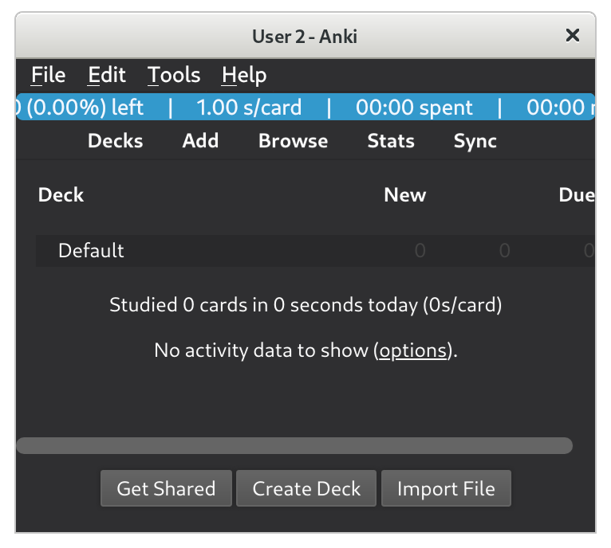

Package ki
Ki is a command-line interface for the version control and editing of .anki2
collections as git repositories of markdown files.
Rather than providing an
interactive UI like the Anki desktop client, ki aims to allow natural editing
in the filesystem.
In general, the purpose of ki is to allow users to work on large, complex Anki decks in exactly the same way they work on large, complex software projects.
Ki provides command-line functions to:
- clone a
.anki2collection into a directory as a git repository. - pull changes from the Anki desktop client (and AnkiWeb) into an existing repository.
- push changes (safely!) back to Anki.
This is documentation for the ki repository.
Installation
Ki is tested on Python 3.9 and 3.10. You'll need to install Python and Git, and then run the following command in a terminal:
- Install the
kipackage:
pip install git+https://github.com/langfield/ki.git@main
Getting started
This section will walk through the following example workflow:
- Cloning an existing collection into a
kirepository. - Editing the note files in the repository.
- Pushing those edits back to Anki.
- Pulling changes made in Anki into the repository.
Before cloning, we'll need to find our .anki2 collection file.
This is where Anki stores the data for all our notes.
Note. If you're new to Anki, or are unfamiliar with the terms collection, profile, note, or card, you may wish to take a look at the Anki documentation.
If you already know the path to the .anki2 collection file you want to clone,
skip to the section on running the clone command.
Finding the .anki2 collection file
To find our collection file, we must first find our Anki data directory. The location of this varies by operating system.
In most cases, you should be able to find your data directory at the path given below for your respective OS:
MacOS
~/Library/Application Support/Anki2
Windows
%APPDATA%\Anki2
GNU/Linux
~/.local/share/Anki2
Note. You can read more about the default Anki data directory locations here.
If you are running Anki 2.1 (which you should be, because ki is not tested
with lower versions), opening this directory will reveal several files and
subdirectories. The following example output is from a machine running Debian
GNU/Linux:
user@host:~/.local/share/Anki2$ ls
addons21 crash.log prefs21.db README.txt 'User 1'
In particular, there is a subdirectory for each profile. In the above
example, there is only one profile, User 1. But, in general, there may be
many profiles associated with a given Anki installation.
Multiple profiles
Below we can see a visual representation of the directory structure of an
Anki data directory with two profiles, User 1, and User 2:
Anki2/
├── addons21
│ ├── 1046608507
│ ├── 109531687
│ ├── 1097423555
│ └── 1972239816
├── crash.log
├── prefs21.db
├── README.txt
├── User 1
│ ├── backups
│ ├── collection2.log
│ ├── collection.anki2
│ ├── collection.log
│ ├── collection.media
│ ├── collection.media.db2
│ └── deleted.txt
└── User 2
├── collection.anki2
├── collection.anki2-wal
└── collection.media
Note that there is a collection.anki2 file in each profile subdirectory.
If you're not sure of the name of your user profile, it can be seen in the title bar of the Anki desktop client:

Most Anki installations will only have one profile, and if you haven't changed
the default profile name, it will probably be called User 1. Let's enter the
profile directory for User 1 and list its contents:
user@host:~/.local/share/Anki2$ cd User\ 1/
user@host:~/.local/share/Anki2/User 1$ ls
backups collection2.log collection.anki2 collection.log collection.media collection.media.db2 deleted.txt
So if we want to clone User 1's collection, the path that we want is:
~/.local/share/Anki2/User\ 1/collection.anki2
We'll pass this as a command-line argument to the ki executable in the next
section.
Running the clone command
Now we're ready to actually clone the collection into a repository. The ki clone
command works similarly to git clone, in that it will create a new directory
for the repository within the current working directory. So if we want to
clone our collection into a new subdirectory in ~/ (the home directory on
macOS and GNU/Linux), we would first make sure we're in the home directory.
Second, we need to check that Anki is closed before cloning. Nothing bad
will happen if we clone while Anki is open, but the command will fail because
the database is locked. Once we've done that, we can run the command:
ki clone ~/.local/share/Anki2/User 1/collection.anki2
And we should see output that looks similar to this:
lyra@oxford$ ki clone ~/.local/share/Anki2/User 1/collection.anki2
Found .anki2 file at '/home/lyra/.local/share/Anki2/User 1/collection.anki2'
Computed md5sum: ad7ea6d486a327042cf0b09b54626b66
Wrote md5sum to '/home/lyra/collection/.ki/hashes'
Cloning into '/home/lyra/collection/'...
100%|█████████████████████████| 28886/28886 [00:10<00:00, 2883.78it/s]
If we list the contents of the home directory, we can see that ki did
indeed create a new directory called collection:
lyra@oxford:~$ ls
collection pkgs
Editing notes
Now that we've successfully cloned our Anki collection into a ki repository,
we can start editing notes! Our home directory looks like this:
lyra@oxford:~$ ls
collection pkgs
And we see the repo we cloned, which is called collection.
Let's change directories to the newly cloned ki repo and take a look at
what's inside:
lyra@oxford:~$ cd collection/
lyra@oxford:~/collection$ ls --classify
algebras/ manifolds/ rings/
We see that we have three directories, which represent three Anki decks. This is just an example; you'll see directories corresponding to the top-level decks in your Anki collection.
Note. The
ls --classifycommand adds a trailing/to the end of directories to distinguish them from ordinary files.
Lets enter the manifolds directory and see what's inside.
lyra@oxford:~/collection$ cd manifolds/
lyra@oxford:~/collection/manifolds$ ls
MANIFOLDS.md
So we see a single markdown file called MANIFOLDS.md, which contains the
notes for the manifolds deck. If we had subdecks of the manifolds deck, we
would see more subdirectories here, and each one would have a markdown file in
it as well. Lets open this file and see what's inside.
We'll use vim to open the markdown file in this example, but any text editor will work.
lyra@oxford:~/collection/manifolds$ vi MANIFOLDS.md
# Note
nid: 1622849751948
model: Basic
deck: manifolds
tags:
markdown: false
## Front
Diffeomorphism
## Back
A smooth surjective map between manifolds which has a smooth inverse.
# Note
nid: 1566621764508
model: Basic
deck: manifolds
tags:
markdown: false
## Front
distribution (on a smooth manifold)
## Back
A distribution on \(M\) of rank \(k\) is a rank-\(k\) subbundle of \(TM\)
So we see the structure of two notes inside this file. For each note, there is a section for note metadata, and a section for each field.
There is a typo in the first note. It says smooth surjective map, but it
should say smooth bijective map. Lets fix it, save our changes, and go back
to the terminal. When we go back up to the root of the repository and run git
status, we can see which files we've changed.
INTERNAL. Add the output of git status here.
And running git diff shows us the content of the unstaged changes:
INTERNAL. Add the output of git diff here.
Then we can commit our changes as usual.
lyra@oxford:~/collection$ git add manifolds/MANIFOLDS.md
lyra@oxford:~/collection$ git commit -m "Fix typo in diffeomorphism definition: 'surjective' -> 'bijective'"
At this point we would usually git push, but if we try that in a ki
repository, we'll see this:
lyra@oxford:~/collection$ git push
fatal: No configured push destination.
Either specify the URL from the command-line or configure a remote repository using
git remote add <name> <url>
and then push using the remote name
git push <name>
Since we're not pushing to an ordinary git remote, but to the Anki SQLite3
database, we must use ki push instead, which is covered briefly in the next
section.
Pushing committed changes back to Anki
This part is super easy! Similar to when we cloned, we must remember to close Anki before pushing, or the command will fail (gracefully). All right, now we just run the command:
lyra@oxford:~/collection$ ki push
Pushing to '/home/lyra/.local/share/Anki2/lyra/collection.anki2'
Computed md5sum: 199216c39eeabe23a1da016a99ffd3e2
Verified md5sum matches latest hash in '/home/lyra/decks/.ki/hashes'
Generating local .anki2 file from latest commit: 2aa009729b6dd337dd1ce795df611f5a49
Writing changes to '/tmp/tmpyiids2qm/original.anki2'...
100%|█████████████████████████████████| 2/2 [00:00<00:00, 1081.56it/s]
Database was modified.
Writing backup of .anki2 file to '/home/lyra/decks/.ki/backups'
Overwrote '/home/lyra/.local/share/Anki2/lyra/collection.anki2'
As the output suggests, ki saves a backup of our collection each time we
push, just in case we wish to hard-revert a change you've made.
Now we can open Anki and view the changes we've made in the note browser!
Pulling changes from Anki into the repository
So now we know how to make changes from the filesystem and push them back to Anki, but suppose that after we cloned our repository, we made some edits within Anki, and we'd like those to show up in our repository? For this, we'll need to close Anki, and then run the following command:
lyra@oxford:~/collection$ ki pull
Pulling from '/home/lyra/.local/share/Anki2/lyra/collection.anki2'
Computed md5sum: 199216c39eeabe23a1da016a99ffd3e2
Updating 5a9ef09..9c30b73
Fast-forward
note1645010162168.md | 4 ++--
note1645222430007.md | 11 +++++++++++
2 files changed, 13 insertions(+), 2 deletions(-)
create mode 100644 note1645222430007.md
From /tmp/tmpt5a3yd9a/ki/local/199216c39eeabe23a1da016a99ffd3e2/
* branch main -> FETCH_HEAD
* [new branch] main -> anki/main
Wrote md5sum to '/home/lyra/decks/.ki/hashes'
And we're done! Our repository is up to date, as ki will tell us if we try to pull again:
lyra@oxford:~/collection$ ki pull
ki pull: up to date.
Merge conflicts
Occasionally, when we edit the same lines in the same note fields in both Anki and our local repository, we may encounter a merge conflict:
lyra@oxford:~/collection$ ki pull
Pulling from '/home/lyra/.local/share/Anki2/User 1/collection.anki2'
Computed md5sum: debeb6689f0b83d520ff913067c598e9
Auto-merging note1645788806304.md
CONFLICT (add/add): Merge conflict in note1645788806304.md
Automatic merge failed; fix conflicts and then commit the result.
From /tmp/tmpgkq4ilfy/ki/local/debeb6689f0b83d520ff913067c598e9/
* branch main -> FETCH_HEAD
* [new branch] main -> anki/main
Wrote md5sum to '/home/mal/collection/.ki/hashes'
This is expected behavior, and since the process of resolving merge conflicts
is the same for ki repositories as git repositories (since ki
repositories are git repositories), we refer to
StackOverflow
for how to proceed.
Usage reference
Clone
The ki clone command takes one required argument (the path to a .anki2
file) and one optional argument (a path to a target directory). The usage is
meant to mirror that of git clone.
An example of the clone subcommand usage and its output is given below.
$ ki clone ~/.local/share/Anki2/lyra/collection.anki2 decks
Found .anki2 file at '/home/lyra/.local/share/Anki2/lyra/collection.anki2'
Computed md5sum: ad7ea6d486a327042cf0b09b54626b66
Wrote md5sum to '/home/lyra/decks/.ki/hashes'
Cloning into '/home/lyra/decks/'...
100%|█████████████████████████| 28886/28886 [00:10<00:00, 2883.78it/s]
Pull
Once an Anki collection has been cloned, we can pull changes made by the Anki
desktop client into our repository.
An example of the pull subcommand usage and its output is given below.
$ ki pull
Pulling from '/home/lyra/.local/share/Anki2/lyra/collection.anki2'
Computed md5sum: 199216c39eeabe23a1da016a99ffd3e2
Updating 5a9ef09..9c30b73
Fast-forward
note1645010162168.md | 4 ++--
note1645222430007.md | 11 +++++++++++
2 files changed, 13 insertions(+), 2 deletions(-)
create mode 100644 note1645222430007.md
From /tmp/tmpt5a3yd9a/ki/local/199216c39eeabe23a1da016a99ffd3e2/
* branch main -> FETCH_HEAD
* [new branch] main -> anki/main
Wrote md5sum to '/home/lyra/decks/.ki/hashes'
ki first deletes any residual ephemeral repositories in /tmp/ki/remote/.
These would only remain here if a previous pull command failed.
It then verifies that the path to the .anki2 file specified in the .ki/
directory (analogous to the .git/ directory) still exists.
It computes and records the hash of the collection file. In this way, ki
keeps track of whether the collection database has changed since the last
clone/pull.
Finally, the collection is then cloned into an ephemeral repository in a temp
directory, which is then git pull-ed into the current repository.
At this point, if the git operation fails, the user can take over and manage the merge themselves.
Push
When we want to push our changes back to the Anki desktop client, we can use
ki push to do that.
An example of the push subcommand usage and its output is given below.
$ ki push
Pushing to '/home/lyra/.local/share/Anki2/lyra/collection.anki2'
Computed md5sum: 199216c39eeabe23a1da016a99ffd3e2
Verified md5sum matches latest hash in '/home/lyra/decks/.ki/hashes'
Generating local .anki2 file from latest commit: 2aa009729b6dd337dd1ce795df611f5a49
Writing changes to '/tmp/tmpyiids2qm/original.anki2'...
100%|█████████████████████████████████| 2/2 [00:00<00:00, 1081.56it/s]
Database was modified.
Writing backup of .anki2 file to '/home/lyra/decks/.ki/backups'
Overwrote '/home/lyra/.local/share/Anki2/lyra/collection.anki2'
We store 5 backups of the collection prior to a push.
Collaborative decks
This section assumes knowledge of the basic ki operations and familiarity
with git. If you haven't yet cloned your Anki collection into a ki
repository, read the getting started section.
- Cloning a collaborative deck from GitHub.
- Editing the collaborative deck.
- [Pulling][pulling other users' changes from github] other users' changes to the deck from GitHub.
- [Pushing][pushing edits back to github] edits back to GitHub.
Cloning a collaborative deck from GitHub
Now that we've created our first ki repository, we might want to try our hand
at collaborating on a deck with other Anki users. We won't actually need to
make use of the ki program to do this, because ki repositories are also
git repositories, and so we can clone collaborative decks from GitHub as
git-submodules of our collection repo.
Note. If you're completely unfamiliar with
git, consider reading this short introduction.
Suppose we've cloned an Anki collection into a ki repository in our home
directory, just like we did in the getting started section,
and we want to add a collaborative deck from GitHub to our collection. Let's
walk through an example. Our home directory looks like this:
lyra@oxford:~$ ls
collection pkgs
And we see the repo we cloned, which is called collection.
To add a collaborative deck repo as a submodule, we'll first need to change
directories to the newly cloned ki repo:
lyra@oxford:~$ cd collection/
lyra@oxford:~/collection$ ls --classify
algebras/ groups/ rings/
We see that we have three directories, which represent three Anki decks. This is just an example; you'll see directories corresponding to the top-level decks in your Anki collection.
Note. The
ls --classifycommand adds a trailing/to the end of directories to distinguish them from ordinary files.
Adding the repository as a git submodule
Suppose we want to add the collaborative deck https://github.com/langfield/manifolds.git to our collection. We can do that by running the command:
git-submodule add https://github.com/langfield/manifolds.git
which yields the output:
lyra@oxford~/collection$ git-submodule add https://github.com/langfield/manifolds.git
Cloning into 'manifolds'...
remote: Counting objects: 11, done.
remote: Compressing objects: 100% (10/10), done.
remote: Total 11 (delta 0), reused 11 (delta 0)
Unpacking objects: 100% (11/11), done.
Checking connectivity... done.
And we can see that the command was successful because we have a new
directory/deck called manifolds in our repo:
lyra@oxford:~/collection$ ls --classify
algebras/ groups/ manifolds/ rings/
Nice!
Editing a collaborative deck
There are two ways to edit a collaborative deck locally:
- Edit the markdown files in the
kirepository. - Edit the deck inside the Anki desktop client.
After we've cloned the manifolds deck repository into a submodule of our ki
repository, we may want to make some edits to the deck.
How it works
ki is built on top of existing tooling implemented in the python package
apy, which is used to parse the Anki
collection SQLite file and convert its contents to human-readable markdown
files.
These files (one per Anki note) are then dumped to a configurable location in
the filesystem as a git repository, whose structure mirrors that of the decks
in the collection. In effect, ki treats the git repo it generates as a local
copy of the collection, and the .anki2 collection file as a remote.
All operations like pulling updates to the collection into ki and pushing
updates from ki into Anki are handled by git under the hood.
This appproach has several advantages:
- Merge conflicts can be handled in the usual, familiar way.
- Additional remotes (e.g. a human-readable backup of a collection on github) can be added easily.
- Users are free to pick the editor of their choice, perform batch editing
with command line tools like
awkorsed, and even add CI actions.
Model
The following diagram shows the dataflow of a typical Anki/ki stack.
+-------------+ +--------------+
| | | |
| AnkiWeb ------------- AnkiMobile |
| | sync | |
+------|------+ +--------------+
|
| sync
|
+------|------+
| |
| Anki |
| |
+------|------+
|
| deck edits
|
+--------|--------+ +------------------+
| | ki clone | |
| ----------------> |
| Collection file | | ~/decks/ |
| (.anki2) | ki push | (git repository) |
| <---------------- |
| | | |
+--------|--------+ +---------^--------+
| |
| ki pull |
| |
| |
+----------v----------+ |
| | |
| /tmp/ki/remote/AAA | ki pull |
| (git repository) -------------------------
| [ephemeral] |
| |
+---------------------+
The node labeled Anki is the Anki desktop client on the localhost. It communicates with the AnkiWeb servers via Anki's sync feature. Other clients (e.g. AnkiDroid and AnkiMobile) are able to (1) pull changes made by the desktop client into their local collections via AnkiWeb, and (2) push changes made locally back to AnkiWeb.
When the Anki desktop client is started on the localhost, it opens and places a
lock on the .anki2 SQLite file. During the session, changes are possibly made
to the deck, and the SQLite file is unlocked when the program is closed.
Since ki must read from this database file, that means that ki commands
will not work while Anki is running. This is by design: the database is
locked for a reason, and enforcing this constraint lowers the likelihood that
users' decks become corrupted.
An ephemeral repository is used as an auxiliary step during the ki pull
operation so that we can merge the Anki desktop client's changes into our
repository via git.
Generating html
By default, ki parses the html of each field and dumps the content only,
insofar as that is possible. It also supports parsing arbitrary html elements
autogenerated by addons and regenerated the updated content. In the following
subsection, we walk through an example.
Example: generating syntax-highlighted code blocks
The anki addon developer Glutanimate has an addon called syntax-highlighting,
which adds UI elements to the Anki note editor that automatically generates a
syntax highlighted version of a code block from the clipboard. In effect, it
generates a formatted HTML table for the code listing that gets dumped into the
source of relevant note field.
A fork of this addon is available here: https://ankiweb.net/shared/info/1100811177
And the source tree for the original addon is on github: https://github.com/glutanimate/syntax-highlighting
For example, consider the following python code block:
n = 1
n >> 1
print(n)
Given the above code, the addon generates the following HTML:
<table class="highlighttable">
<tbody>
<tr>
<td class="linenos">
<div class="linenodiv">
<pre>
<span class="normal">1</span>
<span class="normal">2</span>
<span class="normal">3</span>
</pre>
</div>
</td>
<td class="code">
<div class="highlight">
<pre>
<code>
<span class="n">n</span>
<span class="o">=</span>
<span class="mi">1</span>
<br>
<span class="n">n</span>
<span class="o">>></span>
<span class="mi">1</span>
<br>
<span class="nb">print</span>
<span class="p">(</span>
<span class="n">n</span>
<span class="p">)</span>
<br>
</code>
</pre>
</div>
</td>
</tr>
</tbody>
</table>
Editing fields like this could become annoying very quickly. It would be better
if ki just gave us the markdown version above (only 3 lines), and then
regenerated the note field HTML when converting the repository back into a
.anki2 deck.
Adding ki HTML attributes
And in fact, this is possible. We first fork the addon so we can add some extra
data to our generated HTML. In particular, we'd like to add an attribute
ki-src whose value is the UTF-8 encoded source code. In general, this will be
the encoded version of the source of whatever we'd like to autoformat.
We also add a ki-formatter attribute, whose value is an identifier that
specifies a custom python module (we must implement this) that transforms the
(possibly edited) ki-src text back into a HTML element of the form seen
above.
So let's call our ki-formatter identifier syntax-hl-python. Then our addon
has to change the opening tag of the snippet above to look like:
<table class="highlighttable"; ki-src="n = 1\nn >> 1\nprint(n)\n"; ki-formatter="syntax-hl-python">
All ki needs is the original text of the code block prior to html formatting,
and a function that can reapply the formatting to the modified text. Since the
html table was generated by an addon, we already have a python function for
this, and in general we can provide a ~/.config/ki/ki.json file that maps
implementation IDs to paths of python modules. The module must have a top-level
function defined of the form format(text: str) -> bs4.Tag.
If we have an addon implementation, we can import it here and use it in our
format() implementation. We can add a ki attribute whose value is the
base64 encoding of the code block, and a implementation attribute whose value
is the name of a function. At import-time, ki will decode this and write the
human-readable source to the relevant markdown file instead.
Source code
If you have git, you can clone
a local copy of the source code by running the following command in a terminal:
git clone git@github.com:langfield/ki.git
Expand source code
"""
Ki is a command-line interface for the version control and editing of `.anki2`
collections as git repositories of markdown files. Rather than providing an
interactive UI like the Anki desktop client, ki aims to allow natural editing
*in the filesystem*.
In general, the purpose of ki is to allow users to work on large, complex Anki
decks in exactly the same way they work on large, complex software projects.
.. include:: ./DOCUMENTATION.md
"""
# pylint: disable=invalid-name, missing-class-docstring, broad-except
# pylint: disable=too-many-return-statements, too-many-lines, too-many-arguments
# pylint: disable=no-value-for-parameter, not-callable
import os
import re
import io
import gc
import sys
import time
import json
import copy
import shutil
import random
import logging
import secrets
import sqlite3
import hashlib
import datetime
import itertools
import traceback
import functools
import subprocess
import dataclasses
import configparser
from pathlib import Path
from itertools import chain, starmap, tee
from functools import reduce
from contextlib import redirect_stdout
from dataclasses import dataclass
from collections import namedtuple
import git
import click
import whatthepatch
from lark import Lark
# Required to avoid circular imports because the Anki pylib codebase is gross.
import anki.collection
from anki.cards import Card, TemplateDict
from anki.decks import DeckTreeNode
from anki.utils import ids2str
from anki.models import ChangeNotetypeInfo, ChangeNotetypeRequest, NotetypeDict
from anki.errors import NotFoundError
from anki.exporting import AnkiExporter
from anki.collection import Collection, Note, OpChangesWithId
from anki.importing.noteimp import NoteImporter
from beartype import beartype
from beartype.typing import (
Set,
List,
Dict,
Any,
Optional,
Callable,
Union,
TypeVar,
Sequence,
Tuple,
Iterator,
Iterable,
FrozenSet,
)
import ki.maybes as M
import ki.functional as F
from ki.types import (
MODELS_FILE,
File,
Dir,
EmptyDir,
NoPath,
NoFile,
Link,
WindowsLink,
PseudoFile,
GitChangeType,
Patch,
Delta,
KiRepo,
Field,
Template,
Notetype,
ColNote,
KiRev,
Rev,
Deck,
Root,
DotKi,
CardFile,
NoteDBRow,
DeckNote,
NoteMetadata,
PushResult,
PlannedLink,
Submodule,
MediaBytes,
AddedMedia,
UpdatesRejectedError,
TargetExistsError,
CollectionChecksumError,
MissingNotetypeError,
MissingFieldOrdinalError,
MissingNoteIdError,
NotetypeMismatchError,
NoteFieldValidationWarning,
DeletedFileNotFoundWarning,
DiffTargetFileNotFoundWarning,
NotetypeCollisionWarning,
NotetypeKeyError,
UnnamedNotetypeError,
SQLiteLockError,
NoteFieldKeyError,
MissingMediaDirectoryError,
ExpectedNonexistentPathError,
WrongFieldCountWarning,
InconsistentFieldNamesWarning,
MissingTidyExecutableError,
AnkiDBNoteMissingFieldsError,
GitFileModeParseError,
RenamedMediaFileWarning,
NonEmptyWorkingTreeError,
EmptyNoteWarning,
DuplicateNoteWarning,
UnhealthyNoteWarning,
MediaDirectoryDeckNameCollisionWarning,
notetype_json,
)
from ki.maybes import (
GIT,
GITIGNORE_FILE,
GITMODULES_FILE,
KI,
CONFIG_FILE,
HASHES_FILE,
BACKUPS_DIR,
)
from ki.transformer import NoteTransformer, FlatNote
curried = F.curried
logging.basicConfig(level=logging.INFO)
TQ = F.progressbar
T = TypeVar("T")
NoteId, DeckId, CardId = int, int, int
CardFileMap = Dict[DeckId, List[CardFile]]
UTF8 = "UTF-8"
URLS = "(https?|ftp)://"
MEDIA = M.MEDIA
DEV_NULL = "/dev/null"
BATCH_SIZE = 300
HTML_REGEX = r"</?\s*[a-z-][^>]*\s*>|(\&(?:[\w\d]+|#\d+|#x[a-f\d]+);)"
REMOTE_NAME = "anki"
BRANCH_NAME = F.BRANCH_NAME
MAX_FILENAME_LEN = 60
IGNORE_DIRS = set([GIT, KI, MEDIA])
IGNORE_FILES = set([GITIGNORE_FILE, GITMODULES_FILE, MODELS_FILE])
HEAD_SUFFIX = Path("ki-head")
LOCAL_SUFFIX = Path("ki-local")
REMOTE_SUFFIX = Path("ki-remote")
FIELD_HTML_SUFFIX = Path("ki-fieldhtml")
LCA = "last-successful-ki-push"
TIDY_CMD = "tidy -q -m -i -omit -utf8"
TIDY_OPTS = "--tidy-mark no --show-body-only yes --wrap 68 --wrap-attributes yes"
MEDIA_FILE_RECURSIVE_PATTERN = f"**/{MEDIA}/*"
# This is the key for media files associated with notetypes instead of the
# contents of a specific note.
NOTETYPE_NID = -57
MD = ".md"
ALHPANUMERICS = "abcdefghijklmnopqrstuvwxyzABCDEFGHIJKLMNOPQRSTUVWXYZ0123456789"
SYMBOLS = "!#$%&()*+,-./:;<=>?@[]^_`{|}~"
BASE91_TABLE = list(ALHPANUMERICS + SYMBOLS)
ADDED = GitChangeType.ADDED
RENAMED = GitChangeType.RENAMED
DELETED = GitChangeType.DELETED
MODIFIED = GitChangeType.MODIFIED
TYPECHANGED = GitChangeType.TYPECHANGED
@beartype
def do(f: Callable[[Any], Any], xs: Iterable[Any]) -> None:
"""Perform some action on an iterable."""
set(map(f, xs))
@beartype
def stardo(f: Callable[[Any], Any], xs: Iterable[Any]) -> None:
"""Perform some action on an iterable of tuples, unpacking arguments."""
set(starmap(f, xs))
@beartype
def lock(col_file: File) -> sqlite3.Connection:
"""Check that lock can be acquired on a SQLite3 database given a path."""
try:
con = sqlite3.connect(col_file, timeout=0.1)
con.isolation_level = "EXCLUSIVE"
con.execute("BEGIN EXCLUSIVE")
except sqlite3.DatabaseError as err:
raise SQLiteLockError(col_file, err) from err
if sys.platform == "win32":
con.commit()
con.close()
return con
@beartype
def unlock(con: sqlite3.Connection) -> None:
"""Unlock a SQLite3 database."""
if sys.platform == "win32":
return
con.commit()
con.close()
@beartype
def cp_repo(rev: Rev, suffix: str) -> git.Repo:
"""Get a temporary copy of a git repository in /tmp/<suffix>/."""
# Copy the entire repo into a temp directory ending in `../suffix/`.
target: NoFile = F.chk(F.mkdtemp() / suffix)
ephem = git.Repo(F.copytree(F.root(rev.repo), target))
# Do a reset --hard to the given SHA.
ephem.git.reset(rev.sha, hard=True)
return ephem
@beartype
def cp_ki(ki_rev: KiRev, suffix: str) -> KiRepo:
"""
Given a KiRev, i.e. a pair of the form (kirepo, SHA), we clone
`kirepo.repo` into a temp directory and hard reset to the given commit
hash. Copies the .ki/ directory from `ki_rev.kirepo` without making any
changes.
Parameters
----------
ki_rev : KiRev
The ki repository to clone, and a commit for it.
suffix : str
/tmp/.../ path suffix, e.g. `ki/local/`.
Returns
-------
KiRepo
The copied ki repository.
"""
rev: Rev = F.ki_rev_to_rev(ki_rev)
print(F.root(rev.repo))
ephem: git.Repo = cp_repo(rev, suffix)
F.force_mkdir(F.root(ephem) / KI / BACKUPS_DIR)
kirepo: KiRepo = M.kirepo(F.root(ephem))
return kirepo
@beartype
def is_anki_note(path: File) -> bool:
"""Check if file is a `ki`-style markdown note."""
# Ought to have markdown file extension.
if path.suffix != ".md":
return False
with open(path, "r", encoding=UTF8) as md_f:
lines = md_f.readlines()
if len(lines) < 8:
return False
if lines[0] != "# Note\n":
return False
if lines[1] != "```\n":
return False
if not re.match(r"^guid: ", lines[2]):
return False
return True
@beartype
def is_ignorable(root: Dir, path: Path) -> bool:
"""
Filter out paths in a git repository diff that do not correspond to Anki
notes.
We could do this purely using calls to `is_anki_note()`, but these are
expensive, so we try to find matches without opening any files first.
"""
# Ignore if `path` is an exact match for any of the patterns Since the
# contents of a git repository diff are always going to be files, this
# alone will not correctly ignore directory names given in `patterns`.
#
# If any of the patterns in `dirnames` resolve to one of the parents of
# `path`, return a warning, so that we are able to filter out entire
# directories.
filenames, dirnames = IGNORE_FILES, IGNORE_DIRS
if path.name in filenames | dirnames or len(set(path.parts) & dirnames) > 0:
return True
# If `path` is an extant file (not a directory) and *not* a note, ignore it.
file = F.chk(root / path)
if isinstance(file, File) and not is_anki_note(file):
return True
return False
@curried
@beartype
def mungediff(
parse: Callable[[Delta], DeckNote], a_root: Dir, b_root: Dir, d: git.Diff
) -> Iterable[Union[Delta, Warning]]:
"""Extract deltas and warnings from a collection of diffs."""
a, b = d.a_path, d.b_path
a, b = a if a else b, b if b else a
if is_ignorable(a_root, Path(a)) or is_ignorable(b_root, Path(b)):
return []
# Get absolute and relative paths to 'a' and 'b'.
AB = namedtuple("AB", "a b")
files = AB(F.chk(a_root / a), F.chk(b_root / b))
rels = AB(Path(a), Path(b))
if d.change_type == DELETED.value:
if not F.isfile(files.a):
return [DeletedFileNotFoundWarning(rels.a)]
return [Delta(GitChangeType.DELETED, files.a, rels.a)]
if not F.isfile(files.b):
return [DiffTargetFileNotFoundWarning(rels.b)]
if d.change_type == RENAMED.value:
a_delta = Delta(GitChangeType.DELETED, files.a, rels.a)
b_delta = Delta(GitChangeType.ADDED, files.b, rels.b)
a_decknote, b_decknote = parse(a_delta), parse(b_delta)
if a_decknote.guid != b_decknote.guid:
return [a_delta, b_delta]
return [Delta(GitChangeType(d.change_type), files.b, rels.b)]
@beartype
def diff2(
repo: git.Repo,
parse: Callable[[Delta], DeckNote],
) -> Iterable[Union[Delta, Warning]]:
"""Diff `repo` from `HEAD~1` to `HEAD`."""
# We diff from A~B.
head1: Rev = M.rev(repo, repo.commit("HEAD~1").hexsha)
uuid = hex(random.randrange(16**4))[2:]
head1_repo = cp_repo(head1, suffix=f"HEAD~1-{uuid}")
a_root, b_root = F.root(head1_repo), F.root(repo)
diffidx = repo.commit("HEAD~1").diff(repo.commit("HEAD"))
# Get the diffs for each change type (e.g. 'DELETED').
return chain(*map(mungediff(parse, a_root, b_root), diffidx))
@beartype
def get_models_recursively(kirepo: KiRepo) -> Dict[str, Notetype]:
"""
Find and merge all `models.json` files recursively. Returns a dictionary
sending model names to Notetypes.
"""
@beartype
def load(file: File) -> Iterable[Notetype]:
"""Load a models file."""
with open(file, "r", encoding=UTF8) as f:
return map(M.notetype, json.load(f).values())
notetypes = F.cat(map(load, F.rglob(kirepo.root, MODELS_FILE)))
return {notetype.name: notetype for notetype in notetypes}
@beartype
def check_fields_health(note: Note) -> List[Warning]:
"""Construct warnings when Anki's fields health check fails."""
health = note.fields_check()
if health == 1:
return [EmptyNoteWarning(note, health)]
if health == 2:
return [DuplicateNoteWarning(note, health, html_to_screen(note.fields[0]))]
if health != 0:
return [UnhealthyNoteWarning(note, health)]
return []
@beartype
def get_guid(fields: List[str]) -> str:
"""Construct a new GUID for a note. Adapted from genanki's `guid_for()`."""
# Get the first 8 bytes of the SHA256 of `contents` as an int.
m = hashlib.sha256()
m.update("__".join(fields).encode("utf-8"))
x = reduce(lambda h, b: (h << 8) + b, m.digest()[:8], 0)
# convert to the weird base91 format that Anki uses
chars = []
while x > 0:
chars.append(BASE91_TABLE[x % len(BASE91_TABLE)])
x //= len(BASE91_TABLE)
return "".join(reversed(chars))
@curried
@beartype
def parse_note(parser: Lark, transformer: NoteTransformer, delta: Delta) -> DeckNote:
"""Parse with lark."""
tree = parser.parse(delta.path.read_text(encoding=UTF8))
flatnote: FlatNote = transformer.transform(tree)
parts: Tuple[str, ...] = delta.relpath.parent.parts
deck: str = "::".join(parts)
# Generate a GUID from the hash of the field contents if the `guid` field
# in the note file was left blank.
fields = list(flatnote.fields.values())
guid = flatnote.guid if flatnote.guid != "" else get_guid(fields)
return DeckNote(
title=flatnote.title,
guid=guid,
deck=deck,
model=flatnote.model,
tags=flatnote.tags,
fields=flatnote.fields,
)
@beartype
def plain_to_html(plain: str) -> str:
"""Convert plain text to html"""
# Minor clean up
plain = plain.replace(r"<", "<")
plain = plain.replace(r">", ">")
plain = plain.replace(r"&", "&")
plain = plain.replace(r" ", " ")
plain = re.sub(r"\<b\>\s*\<\/b\>", "", plain)
plain = re.sub(r"\<i\>\s*\<\/i\>", "", plain)
plain = re.sub(r"\<div\>\s*\<\/div\>", "", plain)
# Convert newlines to `<br>` tags.
if not re.search(HTML_REGEX, plain):
plain = plain.replace("\n", "<br>")
return plain.strip()
@curried
@beartype
def update_field(decknote: DeckNote, note: Note, key: str, field: str) -> None:
"""Update a field contained in `note`."""
try:
note[key] = plain_to_html(field)
except IndexError as err:
raise AnkiDBNoteMissingFieldsError(decknote, note.id, key) from err
@beartype
def update_note(
note: Note, decknote: DeckNote, old_notetype: Notetype, new_notetype: Notetype
) -> Iterable[Warning]:
"""
Change all the data of `note` to that given in `decknote`.
This is only to be called on notes whose nid already exists in the
database. Creates a new deck if `decknote.deck` doesn't exist. Assumes
that the model has already been added to the collection, and raises an
exception if it finds otherwise. Changes notetype to that specified by
`decknote.model`. Overwrites all fields with `decknote.fields`.
Updates:
- tags
- deck
- model
- fields
"""
# Check that the passed argument `new_notetype` has a name consistent with
# the model specified in `decknote`. The former should be derived from the
# latter, and if they don't match, there is a bug in the caller.
if decknote.model != new_notetype.name:
raise NotetypeMismatchError(decknote, new_notetype)
nid = note.id
note.tags = decknote.tags
note.flush()
# Set the deck of the given note, as well as all its cards, and create a
# deck with this name if it doesn't already exist. See the
# comments/docstrings in the implementation of the
# `anki.decks.DeckManager.id()` method.
newdid: int = note.col.decks.id(decknote.deck, create=True)
cids = [c.id for c in note.cards()]
if cids:
note.col.set_deck(cids, newdid)
# Set notetype (also clears all fields).
if old_notetype.id != new_notetype.id:
fmap = {field.ord: None for field in old_notetype.flds}
note.col.models.change(old_notetype.dict, [nid], new_notetype.dict, fmap, None)
note.load()
# Validate field keys against notetype.
warnings: List[Warning] = validate_decknote_fields(new_notetype, decknote)
if len(warnings) > 0:
return warnings
# Set field values and flush to collection database. This is correct
# because every field name that appears in `new_notetype` is contained in
# `decknote.fields`, or else we would have printed a warning and returned
# above.
missing = {key for key in decknote.fields if key not in note}
warnings = map(lambda k: NoteFieldValidationWarning(nid, k, new_notetype), missing)
fields = [(key, field) for key, field in decknote.fields.items() if key in note]
stardo(update_field(decknote, note), fields)
note.flush()
# Remove if unhealthy.
fwarns: List[Warning] = check_fields_health(note)
if len(fwarns) > 0:
note.col.remove_notes([nid])
return chain(warnings, fwarns)
@beartype
def validate_decknote_fields(notetype: Notetype, decknote: DeckNote) -> List[Warning]:
"""Validate that the fields given in the note match the notetype."""
warnings: List[Warning] = []
names: List[str] = [field.name for field in notetype.flds]
# TODO: It might also be nice to print the path of the note in the
# repository. This would have to be added to the `DeckNote` spec.
if len(decknote.fields.keys()) != len(names):
warnings.append(WrongFieldCountWarning(decknote, names))
mk_warning = lambda n, k: InconsistentFieldNamesWarning(n, k, decknote)
names_and_keys = F.starfilter(
lambda n, k: n != k, zip(names, decknote.fields.keys())
)
return warnings + list(starmap(mk_warning, names_and_keys))
@beartype
def get_note_path(colnote: ColNote, deck_dir: Dir, card_name: str = "") -> NoFile:
"""Get note path from sort field text."""
field_text = colnote.sortf_text
# Construct filename, stripping HTML tags and sanitizing (quickly).
field_text = plain_to_html(field_text)
field_text = re.sub("<[^<]+?>", "", field_text)
# If the HTML stripping removed all text, we just slugify the raw sort
# field text.
if len(field_text) == 0:
field_text = colnote.sortf_text
name = field_text[:MAX_FILENAME_LEN]
slug = F.slugify(name)
# If the slug is still empty, use all the fields.
if len(slug) == 0:
contents = " ".join(colnote.n.values())
name = contents[:MAX_FILENAME_LEN]
slug = F.slugify(name)
# Make it so `slug` cannot possibly be an empty string, because then we get
# a `Path('.')` which is a bug, and causes a runtime exception. If all else
# fails, use the notetype name, hash of the payload, and creation date.
if len(slug) == 0:
blake2 = hashlib.blake2s()
blake2.update(colnote.n.guid.encode(UTF8))
slug: str = f"{colnote.notetype.name}--{blake2.hexdigest()}"
# Note IDs are in milliseconds.
dt = datetime.datetime.fromtimestamp(colnote.n.id / 1000.0)
slug += "--" + dt.strftime("%Y-%m-%d--%Hh-%Mm-%Ss")
F.yellow(f"Slug for note with guid '{colnote.n.guid}' is empty...")
F.yellow(f"Using blake2 hash of guid as filename: '{slug}'")
if card_name != "":
slug = f"{slug}_{card_name}"
filename: str = f"{slug}{MD}"
note_path = F.chk(deck_dir / filename, resolve=False)
i = 1
while not isinstance(note_path, NoFile):
filename = f"{slug}_{i}{MD}"
note_path = F.chk(deck_dir / filename, resolve=False)
i += 1
return note_path
@beartype
def backup(kirepo: KiRepo) -> int:
"""Backup collection to `.ki/backups`."""
md5sum = F.md5(kirepo.col_file)
name = f"{md5sum}.anki2"
backup_file = F.chk(kirepo.backups_dir / name)
# We assume here that no one would ever make e.g. a directory called
# `name`, since `name` contains the md5sum of the collection file, and
# thus that is extraordinarily improbable. So the only thing we have to
# check for is that we haven't already written a backup file to this
# location.
if isinstance(backup_file, File):
return 1
F.copyfile(kirepo.col_file, F.chk(kirepo.backups_dir / name))
return 0
@beartype
def append_md5sum(dotki: Dir, tag: str, md5sum: str) -> None:
"""Append an md5sum hash to the hashes file."""
hashes_file = dotki / HASHES_FILE
with open(hashes_file, "a+", encoding=UTF8) as hashes_f:
hashes_f.write(f"{md5sum} {tag}\n")
@beartype
def get_field_note_id(nid: int, fieldname: str) -> str:
"""A str ID that uniquely identifies field-note pairs."""
return f"{nid}{F.slugify(fieldname)}"
@beartype
def add_db_note(
col: Collection,
nid: int,
guid: str,
mid: int,
mod: int,
usn: int,
tags: List[str],
fields: List[str],
sfld: str,
csum: int,
flags: int,
data: str,
) -> Note:
"""Add a note to the database directly, with a SQL INSERT."""
importer = NoteImporter(col, "")
importer.addNew(
[
(
nid,
guid,
mid,
mod,
usn,
" " + " ".join(tags) + " ",
"\x1f".join(fields),
sfld,
csum,
flags,
data,
)
]
)
# All the `mark_modified` flag does is update `mod`. Since we always set
# `mod` to the current timestamp anyway, this doesn't matter, so may as
# well set it to `True` to reflect the semantics of the operation we're
# performing. This may present issues down the road since newly imported
# cards from cloned submodules will be marked modified on import/push,
# which is not exactly right. The anki2 importer does *not* mark as
# modified, because importing a new note does not modify its content. We
# would need to have `mod` data inside the note grammar in order for this
# to make sense, which may be more trouble than it's worth. Users writing
# new notes as markdown files would have to set the `mod` to some default
# value, or leave it blank. Assuming people don't do this nearly as often
# as they will export or push notes they've created in Anki, then it might
# make sense.
col.after_note_updates([nid], mark_modified=True)
return col.get_note(nid)
@curried
@beartype
def push_note(
col: Collection,
timestamp_ns: int,
guids: Dict[str, NoteMetadata],
new_nids: Iterator[int],
decknote: DeckNote,
) -> Iterable[Warning]:
"""
Update the Anki `Note` object in `col` corresponding to `decknote`,
creating it if it does not already exist.
Raises
------
MissingNotetypeError
If we can't find a notetype with the name provided in `decknote`.
"""
# Notetype/model names are privileged in Anki, so if we don't find the
# right name, we raise an error.
model_id: Optional[int] = col.models.id_for_name(decknote.model)
if model_id is None:
raise MissingNotetypeError(decknote.model)
if decknote.guid in guids:
nid: int = guids[decknote.guid].nid
try:
note: Note = col.get_note(nid)
except NotFoundError as err:
print(f"{nid = }")
print(f"{decknote.guid = }")
raise err
else:
nid: int = next(new_nids)
note: Note = add_db_note(
col,
nid,
decknote.guid,
model_id,
mod=int(timestamp_ns // 1e9),
usn=-1,
tags=decknote.tags,
fields=list(decknote.fields.values()),
sfld="",
csum=0,
flags=0,
data="",
)
# If we are updating an existing note, we need to know the old and new
# notetypes, and then update the notetype (and the rest of the note data)
# accordingly.
old_notetype: Notetype = M.notetype(note.note_type())
new_notetype: Notetype = M.notetype(col.models.get(model_id))
return update_note(note, decknote, old_notetype, new_notetype)
@beartype
def get_header_lines(colnote) -> List[str]:
"""Get header of markdown representation of note."""
lines = [
"# Note",
"```",
f"guid: {colnote.n.guid}",
f"notetype: {colnote.notetype.name}",
"```",
"",
"### Tags",
"```",
]
lines += colnote.n.tags
lines += ["```", ""]
return lines
@curried
@beartype
def localmedia(s: str, regex: str) -> Iterable[str]:
"""Return local media filenames matching the given regex pattern."""
fnames = map(lambda m: m.group("fname"), re.finditer(regex, s))
fnames = map(lambda s: s.strip(), fnames)
return filter(lambda x: not re.match(URLS, x.lower()), fnames)
@beartype
def media_filenames_in_field(col: Collection, s: str) -> Iterable[str]:
"""A copy of `MediaManager.files_in_str()`, but without LaTeX rendering."""
s = (s.strip()).replace('"', "")
return F.cat(map(localmedia(s), col.media.regexps))
@curried
@beartype
def copy_note_media(
col: Collection, src: Dir, tgt: Dir, row: NoteDBRow
) -> FrozenSet[File]:
"""
Copy a single note's media files and return the copies as a set. We do this
by first filtering for only 'rootfiles', i.e. excluding media files in
subdirectories of the media directory. Then we take only those which exist,
i.e. typecheck as `File`. Then we construct the source and destination
paths, and finally actually perform the copy op, returning the result.
Note that `src` is the media directory where the files originate, and `tgt`
is the media directory we're copying to.
"""
files: Iterable[str] = media_filenames_in_field(col, row.flds)
rootfiles = filter(lambda f: f == os.path.basename(f), files)
medias: Iterable[File] = filter(F.isfile, map(lambda f: F.chk(src / f), rootfiles))
srcdsts = map(lambda file: (file, F.chk(tgt / file.name)), medias)
return frozenset(starmap(F.copyfile, srcdsts))
@curried
@beartype
def copy_notetype_media(
src: Dir, tgt: Dir, paths: Set[Path], m: NotetypeDict
) -> FrozenSet[File]:
"""Copy media from notetype `m` from source to target, returning set of copies."""
matches: Iterable[Path] = filter(lambda p: hasmedia(m, str(p)), paths)
medias = filter(F.isfile, map(lambda p: F.chk(src / p), matches))
srcdsts = map(lambda f: (f, F.chk(tgt / f.name)), medias)
return frozenset(starmap(F.copyfile, srcdsts))
@beartype
def copy_media_files(
col: Collection,
media_target_dir: EmptyDir,
) -> Dict[int, Set[File]]:
"""
Get a list of extant media files used in notes and notetypes, copy those
media files to the top-level `_media/` directory in the repository root,
and return a map sending note ids to sets of copied media files.
Adapted from code in `anki/pylib/anki/exporting.py`. Specifically, the
`AnkiExporter.exportInto()` function.
Parameters
----------
col
Anki collection.
media_target_dir
Where media files are to be copied to.
"""
# All note ids as a string for the SQL query.
strnids = ids2str(list(col.find_notes(query="")))
# This is the path to the media directory. In the original implementation
# of `AnkiExporter.exportInto()`, there is check made of the form
#
# if self.mediaDir:
#
# before doing path manipulation with this string.
#
# Examining the `__init__()` function of `MediaManager`, we can see that
# `col.media.dir()` will only be `None` in the case where `server=True` is
# passed to the `Collection` constructor. But since we do the construction
# within ki, we have a guarantee that this will never be true, and thus we
# can assume it is a nonempty string, which is all we need for the
# following code to be safe.
media_dir = F.chk(Path(col.media.dir()))
if not isinstance(media_dir, Dir):
raise MissingMediaDirectoryError(col.path, media_dir)
# Find media files that appear in note fields and copy them to the target.
query: str = "select * from notes where id in " + strnids
rows: List[NoteDBRow] = [NoteDBRow(*row) for row in col.db.all(query)]
rows = TQ(rows, "Media")
copy_fn = copy_note_media(col, media_dir, media_target_dir)
media = {row.nid: copy_fn(row) for row in rows}
mids = col.db.list("select distinct mid from notes where id in " + strnids)
# Copy notetype template media files.
_, _, files = F.shallow_walk(media_dir)
paths: Iterable[Path] = map(lambda f: Path(f.name), files)
paths = set(filter(lambda f: str(f).startswith("_"), paths))
models = filter(lambda m: int(m["id"]) in mids, col.models.all())
mediasets = map(copy_notetype_media(media_dir, media_target_dir, paths), models)
media[NOTETYPE_NID] = reduce(lambda x, y: x.union(y), mediasets, set())
return media
@beartype
def hasmedia(model: NotetypeDict, fname: str) -> bool:
"""
Check if a notetype has media.
Adapted from `anki.exporting.AnkiExporter._modelHasMedia()`, which is an
instance method, but does not make any use of `self`, and so could be a
staticmethod. It is a pure function.
"""
# First check the styling.
if fname in model["css"]:
return True
# If no reference to fname then check the templates as well.
return any(map(lambda t: fname in t["qfmt"] or fname in t["afmt"], model["tmpls"]))
@curried
@beartype
def write_fields(root: Dir, n: Note) -> Iterable[Tuple[str, File]]:
"""Write a note's fields to be tidied."""
return filter(None, starmap(write_field(root, n.id), n.items()))
@curried
@beartype
def write_field(
root: Dir, nid: int, name: str, text: str
) -> Optional[Tuple[str, File]]:
"""Write a field to a file (if tidying is needed) given its name and text."""
text: str = html_to_screen(text)
if re.search(HTML_REGEX, text):
fid: str = get_field_note_id(nid, name)
return fid, F.write(F.chk(root / fid), text)
return None
@beartype
def write_repository(
col_file: File,
targetdir: Dir,
dotki: DotKi,
media_target_dir: EmptyDir,
) -> Set[WindowsLink]:
"""Write notes to appropriate directories in `targetdir`."""
# Create config file.
config = configparser.ConfigParser()
config["remote"] = {"path": col_file}
with open(dotki.config, "w", encoding=UTF8) as config_f:
config.write(config_f)
# Create temp directory for htmlfield text files.
tempdir: EmptyDir = F.mkdtemp()
root: EmptyDir = F.mksubdir(tempdir, FIELD_HTML_SUFFIX)
# ColNote-containing data structure, to be passed to `write_decks()`.
col: Collection = M.collection(col_file)
nids: Iterable[int] = TQ(col.find_notes(query=""), "Notes")
colnotes: Dict[int, ColNote] = {nid: M.colnote(col, nid) for nid in nids}
media: Dict[int, Set[File]] = copy_media_files(col, media_target_dir)
ns: Iterable[Note] = map(lambda c: c.n, colnotes.values())
fieldfiles = dict(F.cat(map(write_fields(root), TQ(ns, "Fields"))))
tidy_html_recursively(root)
windows_links: Set[WindowsLink] = write_decks(
col=col,
targetdir=targetdir,
colnotes=colnotes,
media=media,
tidy_field_files=fieldfiles,
)
F.rmtree(root)
col.close(save=False)
return windows_links
@beartype
def postorder(node: Union[Root, Deck]) -> List[Deck]:
"""
Post-order traversal. Guarantees that we won't process a node until we've
processed all its children.
"""
descendants: List[Deck] = reduce(lambda xs, x: xs + postorder(x), node.children, [])
return descendants if isinstance(node, Root) else descendants + [node]
@beartype
def preorder(node: Union[Root, Deck]) -> List[Deck]:
"""
Pre-order traversal. Guarantees that we won't process a node until
we've processed all its ancestors.
"""
descendants: List[Deck] = reduce(lambda xs, x: xs + preorder(x), node.children, [])
return descendants if isinstance(node, Root) else [node] + descendants
@beartype
def write_decks(
col: Collection,
targetdir: Dir,
colnotes: Dict[int, ColNote],
media: Dict[int, Set[File]],
tidy_field_files: Dict[str, File],
) -> Set[WindowsLink]:
"""
The proper way to do this is a DFS traversal, perhaps recursively, which
will make it easier to keep things purely functional, accumulating the
model ids of the children in each node. For this, we must construct a tree
from the deck names.
Implement new `ColNote`-writing procedure, using `DeckTreeNode`s.
It must do the following for each deck:
- create the deck directory
- write the models.json file
- create and populate the media directory
- write the note payload for each note in the correct deck, exactly once
In other words, for each deck, we need to write all of its:
- models
- media
- notes
The first two are cumulative: we want the models and media of subdecks to
be included in their ancestors. The notes, however, should not be
cumulative. Indeed, we want each note to appear exactly once in the
entire repository, making allowances for the case where a single note's
cards are spread across multiple decks, in which case we must create a
symlink.
And actually, both of these cases are nicely taken care of for us by the
`DeckManager.cids()` function, which has a `children: bool` parameter
which toggles whether or not to get the card ids of subdecks or not.
Return all windows symlinks created on Windows whose file modes we must set.
"""
# pylint: disable=too-many-locals
#
# Accumulate pairs of model ids and notetype maps. The return type of the
# `ModelManager.get()` call below indicates that it may return `None`,
# but we know it will not because we are getting the notetype id straight
# from the Anki DB.
#
# Dump the models file for the whole repository.
models = {m.id: col.models.get(m.id) for m in col.models.all_names_and_ids()}
with open(targetdir / MODELS_FILE, "w", encoding=UTF8) as f:
json.dump(models, f, ensure_ascii=False, indent=4, sort_keys=True)
# Construct an iterable of all decks except the trivial deck.
root: Deck = M.tree(col, targetdir, col.decks.deck_tree())
collisions, decks = F.part(lambda d: MEDIA in d.fullname, postorder(root))
if any(True for _ in collisions):
warn(MediaDirectoryDeckNameCollisionWarning())
decks = TQ(list(decks), "Decks")
# Write cards and models to disk for each deck.
write = write_deck(col, targetdir, colnotes, tidy_field_files)
notefiles: Dict[NoteId, CardFileMap] = reduce(write, decks, {})
do(write_models(col, models), decks)
# Get all POSIX-style symlinks created on Windows.
cardfiles = F.cat(F.cat(map(lambda x: x.values(), notefiles.values())))
links: Iterable[WindowsLink] = set(filter(None, map(lambda c: c.link, cardfiles)))
return links | symlink_media(col, root, targetdir, media)
@curried
@beartype
def write_deck(
col: Collection,
targetd: Dir,
colnotes: Dict[int, ColNote],
fieldfiles: Dict[str, File],
notefiles: Dict[NoteId, CardFileMap],
deck: Deck,
) -> Dict[NoteId, CardFileMap]:
"""Write all the cards to disk for a single deck."""
did: DeckId = deck.did
cards: Iterable[Card] = map(col.get_card, col.decks.cids(did=did, children=False))
write = write_card(colnotes, fieldfiles, targetd, deck.deckd)
return reduce(write, cards, notefiles)
@curried
@beartype
def write_card(
colnotes: Dict[int, ColNote],
fieldfiles: Dict[str, File],
targetd: Dir,
deckd: Dir,
notefiles: Dict[NoteId, CardFileMap],
card: Card,
) -> Dict[NoteId, CardFileMap]:
"""Write a single card to disk."""
colnote: ColNote = colnotes[card.nid]
cardfile_map: Dict[DeckId, List[CardFile]] = notefiles.get(card.nid, {})
cardfiles: List[CardFile] = cardfile_map.get(card.did, [])
if len(cardfile_map) == 0:
payload: str = get_note_payload(colnote, fieldfiles)
note_path: NoFile = get_note_path(colnote, deckd)
file, link = F.write(note_path, payload), None
elif len(cardfiles) > 0:
file, link = cardfiles[0].file, cardfiles[0].link
else:
existing: CardFile = list(cardfile_map.values())[0][0]
file: File = existing.file
link: Optional[WindowsLink] = get_link(targetd, colnote, deckd, card, file)
cardfile = CardFile(card, link=link, file=file)
return notefiles | {card.nid: cardfile_map | {card.did: cardfiles + [cardfile]}}
@curried
@beartype
def write_models(col: Collection, models: Dict[int, NotetypeDict], deck: Deck) -> None:
"""Write the `models.json` file for the given deck."""
did: int = deck.did
deckd: Dir = deck.deckd
descendants: List[CardId] = col.decks.cids(did=did, children=True)
cards: List[Card] = list(map(col.get_card, descendants))
descendant_mids: Set[int] = {c.note().mid for c in cards}
# Write `models.json` for current deck.
deck_models = {mid: models[mid] for mid in descendant_mids}
with open(deckd / MODELS_FILE, "w", encoding=UTF8) as f:
json.dump(deck_models, f, ensure_ascii=False, indent=4, sort_keys=True)
@beartype
def get_link(
targetd: Dir, colnote: ColNote, deckd: Dir, card: Card, file: File
) -> Optional[WindowsLink]:
"""Return a windows link for a card if one is necessary."""
note_path: NoFile = get_note_path(colnote, deckd, card.template()["name"])
return M.winlink(targetd, PlannedLink(link=note_path, tgt=file))
@beartype
def parentmap(root: Union[Root, Deck]) -> Dict[str, Union[Root, Deck]]:
"""Map deck fullnames to parent `Deck`s."""
parents = {child.fullname: root for child in root.children}
return parents | reduce(lambda x, y: x | y, map(parentmap, root.children), {})
@curried
@beartype
def planned_link(
parents: Dict[str, Union[Root, Deck]], deck: Deck, media_file: File
) -> Optional[PlannedLink]:
"""Get the target of the to-be-created media symlink."""
link: Path = F.chk(deck.mediad / media_file.name, resolve=False)
if not isinstance(link, NoFile):
return None
parent: Union[Root, Deck] = parents[deck.fullname]
if isinstance(parent, Root):
tgt = media_file
else:
tgt = F.chk(parent.mediad / media_file.name, resolve=False)
return PlannedLink(link=link, tgt=tgt)
@curried
@beartype
def symlink_deck_media(
col: Collection,
targetd: Dir,
media: Dict[int, Set[File]],
parents: Dict[str, Union[Root, Deck]],
deck: Deck,
) -> Iterable[WindowsLink]:
"""Create chained symlinks for a single deck."""
# Get nids for all descendant notes with media.
descendants: List[CardId] = col.decks.cids(did=deck.did, children=True)
cards: Iterable[Card] = map(col.get_card, descendants)
nids: Set[NoteId] = {NOTETYPE_NID} | set(map(lambda c: c.nid, cards))
# Get link path and target for each media file, and create the links.
files = F.cat(map(lambda nid: media[nid], filter(lambda nid: nid in media, nids)))
plinks = filter(None, map(planned_link(parents, deck), files))
return filter(None, map(M.winlink(targetd), plinks))
@beartype
def symlink_media(
col: Collection,
root: Root,
targetd: Dir,
media: Dict[int, Set[File]],
) -> Set[WindowsLink]:
"""Chain symlinks up the deck tree into top-level `<collection>/_media/`."""
decks: List[Deck] = preorder(root)
parents: Dict[str, Union[Root, Deck]] = parentmap(root)
return set(F.cat(map(symlink_deck_media(col, targetd, media, parents), decks)))
@beartype
def html_to_screen(html: str) -> str:
"""
Convert html for a *single field* into plaintext, to be displayed within a
markdown file.
Does very litle (just converts HTML-escaped special characters like `<br>`
tags or ` `s to their UTF-8 equivalents).
"""
html = re.sub(r"\<style\>.*\<\/style\>", "", html, flags=re.S)
plain = html
# For convenience: Un-escape some common LaTeX constructs.
plain = plain.replace(r"\\\\", r"\\")
plain = plain.replace(r"\\{", r"\{")
plain = plain.replace(r"\\}", r"\}")
plain = plain.replace(r"\*}", r"*}")
plain = plain.replace(r"<", "<")
plain = plain.replace(r">", ">")
plain = plain.replace(r"&", "&")
plain = plain.replace(r" ", " ")
plain = plain.replace("<br>", "\n")
plain = plain.replace("<br/>", "\n")
plain = plain.replace("<br />", "\n")
# Unbreak lines within src attributes.
plain = re.sub('src= ?\n"', 'src="', plain)
plain = re.sub(r"\<b\>\s*\<\/b\>", "", plain)
return plain.strip()
@beartype
def get_note_payload(colnote: ColNote, tidy_field_files: Dict[str, File]) -> str:
"""
Return the markdown-converted contents of the Anki note represented by
`colnote` as a string.
Given a `ColNote`, which is a dataclass wrapper around a `Note` object
which has been loaded from the DB, and a mapping from `fid`s (unique
identifiers of field-note pairs) to paths, we check for each field of each
note whether that field's `fid` is contained in `tidy_field_files`. If so,
that means that the caller dumped the contents of this field to a file (the
file with this path, in fact) in order to autoformat the HTML source. If
this field was tidied/autoformatted, we read from that path to get the
tidied source, otherwise, we use the field content present in the
`ColNote`.
"""
# Get tidied html if it exists.
tidy_fields = {}
for field_name, field_text in colnote.n.items():
fid = get_field_note_id(colnote.n.id, field_name)
if fid in tidy_field_files:
# HTML5-tidy adds a newline after `<br>` in indent mode, so we
# remove these, because `html_to_screen()` converts `<br>` tags to
# newlines anyway.
tidied_field_text: str = tidy_field_files[fid].read_text(encoding=UTF8)
tidied_field_text = tidied_field_text.replace("<br>\n", "\n")
tidied_field_text = tidied_field_text.replace("<br/>\n", "\n")
tidied_field_text = tidied_field_text.replace("<br />\n", "\n")
tidy_fields[field_name] = tidied_field_text
else:
tidy_fields[field_name] = field_text
lines = get_header_lines(colnote)
for field_name, field_text in tidy_fields.items():
lines.append("## " + field_name)
screen_text = html_to_screen(field_text)
text = colnote.n.col.media.escape_media_filenames(screen_text, unescape=True)
lines.append(text)
lines.append("")
return "\n".join(lines)
@beartype
def git_pull(remote: str, branch: str, cwd: Dir) -> str:
"""Pull remote into branch using a subprocess call."""
args = ["git", "pull", "-v", remote, branch]
p = subprocess.run(args, check=False, cwd=cwd, capture_output=True)
return f"{p.stdout.decode()}\n{p.stderr.decode()}"
@beartype
def echo(string: str, silent: bool = False) -> None:
"""Call `click.secho()` with formatting."""
if not silent:
click.secho(string, bold=True)
@beartype
def warn(w: Warning) -> None:
"""Call `click.secho()` with formatting (yellow)."""
click.secho(f"WARNING: {str(w)}", bold=True, fg="yellow")
@beartype
def tidy_html_recursively(root: Dir) -> None:
"""Call html5-tidy on each file in `root`, editing in-place."""
# Spin up subprocesses for tidying field HTML in-place.
for batch in F.get_batches(F.rglob(root, "*"), BATCH_SIZE):
command: List[str] = TIDY_CMD.split() + TIDY_OPTS.split() + batch
try:
subprocess.run(command, check=False, capture_output=True)
except FileNotFoundError as err:
raise MissingTidyExecutableError(err) from err
@beartype
def get_target(cwd: Dir, col_file: File, directory: str) -> Tuple[EmptyDir, bool]:
"""Create default target directory."""
path = F.chk(Path(directory) if directory != "" else cwd / col_file.stem)
new: bool = True
if isinstance(path, NoPath):
path.mkdir(parents=True)
return M.emptydir(path), new
if isinstance(path, EmptyDir):
new = False
return path, new
raise TargetExistsError(path)
@beartype
def echo_note_change_types(deltas: Iterable[Delta]) -> None:
"""Write a table of git change types for notes to stdout."""
# pylint: disable=too-many-locals
is_change_type = lambda t: lambda d: d.status == t
vs, ws, xs, ys, zs = tee(deltas, 5)
adds = list(filter(is_change_type(ADDED), vs))
deletes = list(filter(is_change_type(DELETED), ws))
renames = list(filter(is_change_type(RENAMED), xs))
modifies = list(filter(is_change_type(MODIFIED), ys))
types = list(filter(is_change_type(TYPECHANGED), zs))
LPAD, RPAD = 15, 9
add_info: str = "ADD".ljust(LPAD) + str(len(adds)).rjust(RPAD)
delete_info: str = "DELETE".ljust(LPAD) + str(len(deletes)).rjust(RPAD)
modification_info: str = "MODIFY".ljust(LPAD) + str(len(modifies)).rjust(RPAD)
rename_info: str = "RENAME".ljust(LPAD) + str(len(renames)).rjust(RPAD)
type_info: str = "TYPE CHANGE".ljust(LPAD) + str(len(types)).rjust(RPAD)
echo("=" * (LPAD + RPAD))
echo("Note change types")
echo("-" * (LPAD + RPAD))
echo(f"{add_info}\n{delete_info}\n{modification_info}\n{rename_info}\n{type_info}")
echo("=" * (LPAD + RPAD))
@curried
@beartype
def add_model(col: Collection, model: Notetype) -> None:
"""Add a model to the database."""
# Check if a model already exists with this name, and get its `mid`.
mid: Optional[int] = col.models.id_for_name(model.name)
# TODO: This function is unfinished. We need to add new notetypes (and
# rename them) only if they are 'new', where new means they are different
# from anything else already in the DB, in the content-addressed sense. If
# they are new, then we must indicate that the notes we are adding actually
# have these new notetypes. For this, it may make sense to use the hash of
# the notetype everywhere (i.e. in the note file) rather than the name or
# mid.
#
# If a model already exists with this name, parse it, and check if its hash
# is identical to the model we are trying to add.
if mid is not None:
nt: NotetypeDict = col.models.get(mid)
# If we are trying to add a model that has the exact same content and
# name as an existing model, skip it.
existing: Notetype = M.notetype(nt)
if notetype_json(model) == notetype_json(existing):
return
# If the hashes don't match, then we somehow need to update
# `decknote.model` for the relevant notes.
warn(NotetypeCollisionWarning(model, existing))
nt_copy: NotetypeDict = copy.deepcopy(model.dict)
nt_copy["id"] = 0
changes: OpChangesWithId = col.models.add_dict(nt_copy)
nt: NotetypeDict = col.models.get(changes.id)
model: Notetype = M.notetype(nt)
echo(f"Added model '{model.name}'")
@beartype
def mediadata(col: Collection, fname: str) -> bytes:
"""Get media file content as bytes (empty if missing)."""
if not col.media.have(fname):
return b""
path = os.path.join(col.media.dir(), fname)
try:
with open(path, "rb") as f:
return f.read()
except OSError:
return b""
@beartype
def unquote_diff_path(path: str) -> str:
"""Unquote a diff/patch path."""
if len(path) <= 4:
return path
if path[0] == '"' and path[-1] == '"':
path = path.lstrip('"').rstrip('"')
if path[:2] in ("a/", "b/"):
path = path[2:]
return path
@beartype
def get_patches(unsub_repo: git.Repo) -> Iterable[Patch]:
"""Get all patches from HEAD to FETCH_HEAD in a flattened git repository."""
raw_unified_patch = unsub_repo.git.diff(["HEAD", "FETCH_HEAD"], binary=True)
# Construct patches for every file in the flattenened/unsubmoduled checkout
# of the revision of the last successful `ki push`. Each patch is the diff
# between the relevant file in the flattened (all submodules converted to
# ordinary directories) repository and the same file in the Anki remote (a
# fresh `ki clone` of the current database).
patches: List[Patch] = []
f = io.StringIO()
with redirect_stdout(f):
for diff in whatthepatch.parse_patch(raw_unified_patch):
a_path = unquote_diff_path(diff.header.old_path)
b_path = unquote_diff_path(diff.header.new_path)
if a_path == DEV_NULL:
a_path = b_path
if b_path == DEV_NULL:
b_path = a_path
patch = Patch(Path(a_path), Path(b_path), diff)
patches.append(patch)
return patches
@curried
@beartype
def rm_remote_sm(repo: git.Repo, sub: Submodule) -> Submodule:
"""Remove submodule directory from given repo."""
if os.path.isdir(F.root(repo) / sub.rel_root):
repo.git.rm(["-r", str(sub.rel_root)])
return sub
@beartype
def has_patch(patch: Patch, sm_rel_root: Path) -> bool:
"""Check if patch path is relative to the given root."""
# TODO: We must also treat case where we moved a file into or out of a
# submodule, but we just do this for now. In this case, we may have
# `patch.a` not be relative to the submodule root (if we moved a file into
# the sm dir), or vice-versa.
a_in_submodule: bool = patch.a.is_relative_to(sm_rel_root)
b_in_submodule: bool = patch.b.is_relative_to(sm_rel_root)
return a_in_submodule and b_in_submodule
@curried
@beartype
def apply(subrepos: Dict[Path, Submodule], patch: Patch) -> Iterable[Path]:
"""Apply a patch within the relevant submodule repositories."""
# Consider only repos containing patch, ignore submodule 'file' itself.
subs = filter(lambda s: has_patch(patch, s.rel_root), subrepos.values())
subs = filter(lambda s: s.rel_root not in (patch.a, patch.b), subs)
patch_dir: Dir = F.mkdtemp()
return map(apply_in_subrepo(patch_dir, patch), subs)
@curried
@beartype
def apply_in_subrepo(
patch_dir: Dir,
patch: Patch,
sub: Submodule,
) -> Path:
"""Apply a patch within a submodule."""
# Hash the patch to use as a filename.
blake2 = hashlib.blake2s()
blake2.update(patch.diff.text.encode())
patch_hash: str = blake2.hexdigest()
patch_path: NoFile = F.chk(patch_dir / patch_hash)
# We write as bytes so that it is not necessary to strip trailing linefeeds
# from each line so that `git apply` is happy on Windows (equivalent to
# running `dos2unix`).
patch_b: bytes = patch.diff.text.encode("UTF-8")
F.writeb(patch_path, patch_b)
# Number of leading path components to drop from diff paths.
parts: str = str(len(sub.rel_root.parts) + 1)
# TODO: More tests are needed to make sure that the `git apply` call is not
# flaky. In particular, we must treat new and deleted files.
#
# Note that it is unnecessary to use `--3way` here, because this submodule
# is supposed to represent a fast-forward from the last successful push to
# the current state of the remote. There should be no nontrivial merging
# involved.
#
# Then -p<n> flag tells `git apply` to drop the first n leading path
# components from both diff paths. So if n is 2, we map `a/dog/cat` ->
# `cat`.
sub.sm_repo.git.apply(patch_path, p=parts, allow_empty=True, verbose=True)
return patch.a
@curried
@beartype
def pull_sm(
subrepos: Dict[Path, git.Repo],
sub: Submodule,
) -> Submodule:
"""
Safely pull changes within a submodule.
New commits in submodules within `lca_repo` are be pulled into the
submodules within `kirepo.repo`. This is done by adding a remote pointing
to the patched submodule in each corresponding submodule in the main
repository, and then pulling from that remote. Then the remote is deleted.
"""
# TODO: What if a submodule was deleted entirely? (Note that we treat the
# case where submodules are added in the caller.)
sm_repo = sub.sm_repo
sm_rel_root = sub.rel_root
remote_sm: git.Repo = subrepos[sm_rel_root].sm_repo
branch: str = sub.branch
# TODO: What's in `upstream` that isn't already in `branch`?
remote_sm.git.branch("upstream")
# Simulate a `git merge --strategy=theirs upstream`.
remote_sm.git.checkout(["-b", "tmp", "upstream"])
remote_sm.git.merge(["-s", "ours", branch])
remote_sm.git.checkout(branch)
remote_sm.git.merge("tmp")
remote_sm.git.branch(["-D", "tmp"])
sm_remote = sm_repo.create_remote(REMOTE_NAME, F.gitd(remote_sm))
echo(git_pull(REMOTE_NAME, branch, F.root(sm_repo)))
sm_repo.delete_remote(sm_remote)
remote_sm.close()
sm_repo.close()
return sub
@beartype
def get_note_metadata(col: Collection) -> Dict[str, NoteMetadata]:
"""
Construct a map from guid -> (nid, mod, mid), adapted from
`Anki2Importer._import_notes()`. Note that `mod` is the modification
timestamp, in epoch seconds (timestamp of when the note was last modified).
"""
guids: Dict[str, NoteMetadata] = {}
for nid, guid, mod, mid in col.db.execute("select id, guid, mod, mid from notes"):
guids[guid] = NoteMetadata(nid, mod, mid)
return guids
@curried
@beartype
def mediabytes(col: Collection, file: File) -> MediaBytes:
"""Get old bytes (from collection) and new bytes (from file) for media file."""
old: bytes = mediadata(col, file.name)
new: bytes = file.read_bytes()
return MediaBytes(file=file, old=old, new=new)
@curried
@beartype
def addmedia(col: Collection, m: MediaBytes) -> AddedMedia:
"""Add a media file to collection (possibly renaming)."""
return AddedMedia(file=m.file, new_name=col.media.add_file(m.file))
@beartype
def commit_hashes_file(kirepo: KiRepo) -> None:
"""Add and commit hashes file."""
kirepo.repo.index.add(f"{KI}/{HASHES_FILE}")
kirepo.repo.index.commit("Update collection hashes file.")
@curried
@beartype
def set_120000(repo: git.Repo, root: Dir, abslink: WindowsLink) -> None:
"""Use `git update-index` to set 120000 file mode on a windows symlink."""
# Convert to POSIX pathseps since that's what `git` wants.
link: str = abslink.relative_to(root).as_posix()
githash = repo.git.hash_object(["-w", f"{link}"])
target = f"120000,{githash},{link}"
repo.git.update_index(target, add=True, cacheinfo=True)
@curried
@beartype
def backupd(tmpdir: Dir, lca_repo: git.Repo, p: Path) -> Dir:
"""Move a relative directory to a temporary location."""
return F.movetree(F.chk(F.root(lca_repo) / p), F.chk(tmpdir / p))
@curried
@beartype
def merge_new_sm(x: Tuple[Dir, Submodule]) -> None:
"""Merge backed-up files into a new submodule."""
sm_dir, sm = x
sm_backup_repo, branch = F.init(sm_dir)
sm_backup_repo.git.add(all=True)
sm_backup_repo.index.commit("Submodule merge")
remote = sm.sm_repo.create_remote("sm-back", sm_backup_repo.git_dir)
sm.sm_repo.git.fetch("sm-back")
sm.sm_repo.git.merge(
[f"sm-back/{branch}"], no_edit=True, allow_unrelated_histories=True
)
sm.sm_repo.delete_remote(remote)
@click.group()
@click.version_option()
@beartype
def ki() -> None:
"""
The universal CLI entry point for `ki`.
Takes no arguments, only has three subcommands (clone, pull, push).
"""
return
@ki.command()
@click.argument("collection")
@click.argument("directory", required=False, default="")
def clone(collection: str, directory: str = "") -> None:
"""
Clone an Anki collection into a directory.
Parameters
----------
collection : str
The path to an `.anki2` collection file.
directory : str, default=""
An optional path to a directory to clone the collection into.
Note: we check that this directory does not yet exist.
"""
col_file: File = M.xfile(Path(collection))
@beartype
def cleanup(targetdir: Dir, new: bool) -> Union[Dir, EmptyDir, NoPath]:
"""Cleans up after failed clone operations."""
try:
if new:
return F.rmtree(targetdir)
_, dirs, files = F.shallow_walk(targetdir)
do(F.rmtree, dirs)
do(os.remove, files)
except PermissionError as _:
pass
return F.chk(targetdir)
# Write all files to `targetdir`, and instantiate a `KiRepo` object.
targetdir, new = get_target(F.cwd(), col_file, directory)
try:
_, _ = _clone(col_file, targetdir, msg="Initial commit", silent=False)
kirepo: KiRepo = M.kirepo(targetdir)
kirepo.repo.create_tag(LCA)
kirepo.repo.close()
gc.collect()
except Exception as err:
cleanup(targetdir, new)
raise err
@beartype
def _clone(
col_file: File,
targetdir: EmptyDir,
msg: str,
silent: bool,
) -> Tuple[git.Repo, str]:
"""
Clone an Anki collection into a directory.
The caller expects that `targetdir` will be the root of a valid ki
repository after this function is called, so we need to do our repo
initialization with gitpython in here, as opposed to in `clone()`.
Parameters
----------
col_file : pathlib.Path
The path to an `.anki2` collection file.
targetdir : pathlib.Path
A path to a directory to clone the collection into.
Note: we check that this directory is empty.
msg : str
Message for initial commit.
silent : bool
Whether to suppress progress information printed to stdout.
Returns
-------
repo : git.Repo
The cloned repository.
branch_name : str
The name of the default branch.
"""
kidir, mediadir = M.empty_kirepo(targetdir)
dotki: DotKi = M.dotki(kidir)
md5sum = F.md5(col_file)
echo(f"Cloning into '{targetdir}'...", silent=silent)
(targetdir / GITIGNORE_FILE).write_text(f"{KI}/{BACKUPS_DIR}\n")
# Write note files to disk and commit.
windows_links = write_repository(col_file, targetdir, dotki, mediadir)
repo, branch = F.init(targetdir)
F.commitall(repo, msg)
do(set_120000(repo, F.root(repo)), windows_links)
# We do *not* call `git.add()` here since we call `git.update_index()` above.
repo.index.commit(msg)
# On Windows, there are changes left in the working tree at this point
# (because git sees that the mode of the actual underlying file is 100644),
# so we must stash them in order to ensure the repo is not left dirty.
repo.git.stash("save")
if repo.is_dirty():
raise NonEmptyWorkingTreeError(repo)
# Store a checksum of the Anki collection file in the hashes file.
append_md5sum(kidir, col_file.name, md5sum)
# Squash last two commits together.
repo.git.add([KI])
repo.git.reset(["--soft", "HEAD~1"])
repo.git.commit(message=msg, amend=True)
return repo, branch
@ki.command()
@beartype
def pull() -> None:
"""
Pull from a preconfigured remote Anki collection into an existing ki
repository.
"""
# Check that we are inside a ki repository, and get the associated collection.
kirepo: KiRepo = M.kirepo(F.cwd())
con: sqlite3.Connection = lock(kirepo.col_file)
md5sum: str = F.md5(kirepo.col_file)
hashes: List[str] = kirepo.hashes_file.read_text(encoding=UTF8).split("\n")
hashes = list(filter(lambda l: l != "", hashes))
if md5sum in hashes[-1]:
echo("ki pull: up to date.")
return
_pull(kirepo)
unlock(con)
@beartype
def _pull(kirepo: KiRepo) -> None:
"""
Pull into `kirepo` without checking if we are already up-to-date.
Load the git repository at `anki_remote_root`, force pull (preferring
'theirs', i.e. the new stuff from the sqlite3 database) changes from that
repository (which is cloned straight from the collection, which in general
may have new changes) into `lca_repo`, and then pull `lca_repo` into the
main repository.
We pull in this sequence in order to avoid merge conflicts. Since we first
pull into a snapshot of the repository as it looked when we last pushed to
the database, we know that there cannot be any merge conflicts, because to
git, it just looks like we haven't made any changes since then. Then we
pull the result of that merge into our actual repository. So there could
still be merge conflicts at that point, but they will only be 'genuine'
merge conflicts in some sense, because as a result of using this snapshot
strategy, we give the anki collection the appearance of being a persistent
remote git repo. If we didn't do this, the fact that we did a fresh clone
of the database every time would mean that everything would look like a
merge conflict, because there is no shared history.
Parameters
----------
kirepo : KiRepo
A dataclass representing the Ki repository in the cwd.
Raises
------
CollectionChecksumError
If the Anki collection file was modified while pulling changes. This is
very unlikely, since the caller acquires a lock on the SQLite3
database.
"""
# pylint: disable=too-many-locals
md5sum: str = F.md5(kirepo.col_file)
# Copy `repo` into a temp directory and `reset --hard` at rev of last
# successful `push()`, which is the last common ancestor, or 'LCA'.
head: Rev = M.head(kirepo.repo)
rev: Rev = M.rev(kirepo.repo, sha=kirepo.repo.tag(LCA).commit.hexsha)
lca_repo: git.Repo = cp_repo(rev, f"{LOCAL_SUFFIX}-{md5sum}")
unsub_repo: git.Repo = cp_repo(rev, f"unsub-{LOCAL_SUFFIX}-{md5sum}")
# Clone collection into a temp directory at `anki_remote_root`.
anki_remote_root: EmptyDir = F.mksubdir(F.mkdtemp(), REMOTE_SUFFIX / md5sum)
msg = f"Fetch changes from DB at `{kirepo.col_file}` with md5sum `{md5sum}`"
remote_repo, branch = _clone(kirepo.col_file, anki_remote_root, msg, silent=False)
# Create git remote pointing to `remote_repo`, which represents the current
# state of the Anki SQLite3 database, and pull it into `lca_repo`.
anki_remote = lca_repo.create_remote(REMOTE_NAME, F.gitd(remote_repo))
unsub_remote = unsub_repo.create_remote(REMOTE_NAME, F.gitd(remote_repo))
# =================== NEW PULL ARCHITECTURE ====================
# Update all submodules in `unsub_repo`. This is critically important,
# because it essentially 'rolls-back' commits made in submodules since the
# last successful ki push in the main repository. Our `cp_repo()` call does
# a `reset --hard` to the commit of the last push, but this does *not* do
# an equivalent rollback for submodules. So they may contain new local
# changes that we don't want. Calling `git submodule update` here checks
# out the commit that *was* recorded in the submodule file at the rev of
# the last push.
unsub_repo.git.submodule("update")
lca_repo.git.submodule("update")
unsub_repo = F.unsubmodule(unsub_repo)
anki_remote.fetch()
unsub_remote.fetch()
patches: Iterable[Patch] = get_patches(unsub_repo)
# Remove submodules from `remote_repo` and map the roots of each submodule
# (relative to the working directory of `lca_repo`) to the submodule repos
# themselves.
subrepos: Dict[Path, Submodule] = M.submodules(lca_repo)
do(rm_remote_sm(remote_repo), subrepos.values())
if len(lca_repo.submodules) > 0:
F.commitall(remote_repo, msg="Remove submodule directories.")
# Apply and commit patches within submodules.
patch_paths = set(F.cat(map(apply(subrepos), patches)))
msg = "Applying patches:\n\n" + "".join(map(lambda p: f" `{p}`\n", patch_paths))
do(lambda s: F.commitall(s.sm_repo, msg), subrepos.values())
# Pull changes from remote into each submodule.
sms: Dict[Path, Submodule] = M.submodules(kirepo.repo)
subs = filter(lambda s: s.rel_root in subrepos, sms.values())
do(pull_sm(subrepos), subs)
# Commit new submodules commits in `lca_repo`.
if len(patch_paths) > 0:
F.commitall(lca_repo, msg=msg)
# Handle deleted files, preferring `theirs`.
diffidx = lca_repo.commit("HEAD").diff(lca_repo.commit("FETCH_HEAD"))
dels: Iterable[git.Diff] = diffidx.iter_change_type(DELETED.value)
dels = filter(lambda d: d.a_path != GITMODULES_FILE, dels)
dels = filter(lambda d: F.isfile(F.chk(F.root(lca_repo) / d.a_path)), dels)
a_paths: Iterable[str] = set(map(F.git_rm(lca_repo), map(lambda d: d.a_path, dels)))
if len(a_paths) > 0:
details: str = "".join(map(lambda a: f"Remove '{a}'\n", a_paths))
F.commitall(lca_repo, msg=f"Remove files deleted in remote.\n\n{details}")
# =================== NEW PULL ARCHITECTURE ====================
# TODO: There is an unsub-like process above performed on `remote_repo`,
# can we just pass unsub=True here instead?
remote_root: Dir = F.root(remote_repo)
lca_repo = M.gitcopy(lca_repo, remote_root, unsub=False)
F.commitall(lca_repo, f"Pull changes from repository at `{remote_root}`")
# For each submodule that is new, `deinit` it.
new_sms = {k: v for k, v in sms.items() if v.rel_root not in subrepos}
do(lambda p: kirepo.repo.git.submodule(["deinit", str(p)]), new_sms.keys())
# Move all files in the LCA repo that reside in directories corresponding
# to new submodules into temporary locations, and commit the removals.
sm_backup_dir: Dir = F.mkdtemp()
tmps: Set[Dir] = set(map(backupd(sm_backup_dir, lca_repo), new_sms.keys()))
msg = "'Remove new submodule directories from LCA repo'"
lca_repo.git.add(all=True)
lca_repo.git.commit(["--allow-empty", "-m", msg])
# Create remote pointing to `lca_repo` and pull into `repo`. Note
# that this `git pull` may not always create a merge commit, because a
# fast-forward only updates the branch pointer.
lca_remote = kirepo.repo.create_remote(REMOTE_NAME, lca_repo.git_dir)
kirepo.repo.git.config("pull.rebase", "false")
out = git_pull(REMOTE_NAME, branch, kirepo.root)
echo(out)
kirepo.repo.delete_remote(lca_remote)
# Submodule sync, `update --init`, and merge backup files.
sync = lambda p: kirepo.repo.git.submodule(["sync", str(p)])
update = lambda p: kirepo.repo.git.submodule(["update", "--init", str(p)])
do(sync, new_sms.keys())
do(update, new_sms.keys())
do(merge_new_sm, zip(tmps, new_sms.values()))
# The merge will have overwritten the hashes file with only the collection
# hash from the fresh clone of the remote, so we checkout its state from
# before the merge.
kirepo.repo.git.checkout([head.sha, "--", f"{KI}/{HASHES_FILE}"])
# Raise an error if the collection was modified during pull.
if F.md5(kirepo.col_file) != md5sum:
raise CollectionChecksumError(kirepo.col_file)
# Append the hash of the collection to the hashes file.
if "Aborting" not in out:
append_md5sum(kirepo.ki, kirepo.col_file.name, md5sum)
commit_hashes_file(kirepo)
# PUSH
@ki.command()
@beartype
def push() -> PushResult:
"""
Push a ki repository into a .anki2 file.
Consists of the following operations:
- Clone collection into a temp directory
- Delete all files and folders except `.git/`
- Copy into this temp directory all files and folders from the current
repository checked out at HEAD (excluding `.git*` stuff).
- Unsubmodule repo
- Add and commit everything
- Take diff from `HEAD~1` to `HEAD`.
Returns
-------
PushResult
An `Enum` indicating whether the push was nontrivial.
Raises
------
UpdatesRejectedError
If the user needs to pull remote changes first.
"""
# pylint: disable=too-many-locals
# Check that we are inside a ki repository, and load collection.
kirepo: KiRepo = M.kirepo(F.cwd())
con: sqlite3.Connection = lock(kirepo.col_file)
md5sum: str = F.md5(kirepo.col_file)
hashes: List[str] = kirepo.hashes_file.read_text(encoding=UTF8).split("\n")
hashes = list(filter(lambda l: l != "", hashes))
if md5sum not in hashes[-1]:
raise UpdatesRejectedError(kirepo.col_file)
# =================== NEW PUSH ARCHITECTURE ====================
head_kirepo: KiRepo = cp_ki(M.head_ki(kirepo), f"{HEAD_SUFFIX}-{md5sum}")
remote_root: EmptyDir = F.mksubdir(F.mkdtemp(), REMOTE_SUFFIX / md5sum)
msg = f"Fetch changes from collection '{kirepo.col_file}' with md5sum '{md5sum}'"
remote_repo, _ = _clone(kirepo.col_file, remote_root, msg, silent=True)
remote_repo = M.gitcopy(remote_repo, head_kirepo.root, unsub=True)
F.commitall(remote_repo, f"Pull changes from repository at `{kirepo.root}`")
# =================== NEW PUSH ARCHITECTURE ====================
parse: Callable[[Delta], DeckNote] = parse_note(*M.parser_and_transformer())
deltas, warnings = F.part(lambda x: isinstance(x, Delta), diff2(remote_repo, parse))
do(warn, warnings)
# If there are no changes, quit.
if len(set(deltas)) == 0:
echo("ki push: up to date.")
return PushResult.UP_TO_DATE
echo(f"Pushing to '{kirepo.col_file}'")
models: Dict[str, Notetype] = get_models_recursively(head_kirepo)
return write_collection(deltas, models, kirepo, parse, head_kirepo, con)
@beartype
def write_collection(
deltas: Iterable[Delta],
models: Dict[str, Notetype],
kirepo: KiRepo,
parse: Callable[[Delta], DeckNote],
head_kirepo: KiRepo,
con: sqlite3.Connection,
) -> PushResult:
"""Push a list of `Delta`s to an Anki collection."""
# pylint: disable=too-many-locals
# Copy collection to a temp directory.
temp_col_dir: Dir = F.mkdtemp()
new_col_file = temp_col_dir / kirepo.col_file.name
col_name: str = kirepo.col_file.name
new_col_file: NoFile = F.chk(temp_col_dir / col_name)
new_col_file: File = F.copyfile(kirepo.col_file, new_col_file)
# Open collection and add new models to root `models.json` file.
col: Collection = M.collection(new_col_file)
do(add_model(col), models.values())
# Stash both unstaged and staged files (including untracked).
head_kirepo.repo.git.stash(include_untracked=True, keep_index=True)
head_kirepo.repo.git.reset("HEAD", hard=True)
# Display table of note change type counts and partition deltas into
# 'deletes' and 'not deletes'.
xs, ys, zs = tee(deltas, 3)
echo_note_change_types(xs)
dels: Iterable[Delta] = filter(lambda d: d.status == DELETED, ys)
deltas: Iterable[Delta] = filter(lambda d: d.status != DELETED, zs)
# Map guid -> (nid, mod, mid).
guids: Dict[str, NoteMetadata] = get_note_metadata(col)
# Parse to-be-deleted notes and remove them from collection.
del_guids: Iterable[str] = map(lambda dd: dd.guid, map(parse, dels))
del_guids = set(filter(lambda g: g in guids, del_guids))
del_nids: Iterable[NoteId] = map(lambda g: guids[g].nid, del_guids)
col.remove_notes(list(del_nids))
# Push changes for all other notes.
guids = {k: v for k, v in guids.items() if k not in del_guids}
timestamp_ns: int = time.time_ns()
new_nids: Iterator[int] = itertools.count(int(timestamp_ns / 1e6))
decknotes: Iterable[DeckNote] = map(parse, deltas)
do(warn, F.cat(map(push_note(col, timestamp_ns, guids, new_nids), decknotes)))
# It is always safe to save changes to the DB, since the DB is a copy.
col.close(save=True)
# Backup collection file and overwrite collection.
backup(kirepo)
F.copyfile(new_col_file, kirepo.col_file)
echo(f"Overwrote '{kirepo.col_file}'")
# Add media files to collection and follow windows symlinks.
col: Collection = M.collection(kirepo.col_file)
media_files = F.rglob(head_kirepo.root, MEDIA_FILE_RECURSIVE_PATTERN)
media_files = map(M.linktarget, media_files)
mbytes: Iterable[MediaBytes] = map(mediabytes(col), media_files)
# Skip media files whose twin in collection has same name and same data.
mbytes = filter(lambda m: m.old == b"" or m.old != m.new, mbytes)
# Add (and possibly rename) media paths.
renames = filter(lambda a: a.file.name != a.new_name, map(addmedia(col), mbytes))
warnings = map(lambda r: RenamedMediaFileWarning(r.file.name, r.new_name), renames)
do(warn, warnings)
col.close(save=True)
# Append and commit collection checksum to hashes file.
append_md5sum(kirepo.ki, kirepo.col_file.name, F.md5(kirepo.col_file))
commit_hashes_file(kirepo)
# Update commit SHA of most recent successful PUSH and unlock SQLite DB.
kirepo.repo.delete_tag(LCA)
kirepo.repo.create_tag(LCA)
unlock(con)
return PushResult.NONTRIVIALSub-modules
ki.functional-
Type-safe, non Anki-specific functions.
ki.maybes-
Factory functions for safely handling errors in type construction.
ki.transformer-
A Lark transformer for the ki note grammar.
ki.types-
Types for ki.
Functions
def add_db_note(col: anki.collection.Collection, nid: int, guid: str, mid: int, mod: int, usn: int, tags: list[str], fields: list[str], sfld: str, csum: int, flags: int, data: str) ‑> anki.notes.Note-
Add a note to the database directly, with a SQL INSERT.
Expand source code
@beartype def add_db_note( col: Collection, nid: int, guid: str, mid: int, mod: int, usn: int, tags: List[str], fields: List[str], sfld: str, csum: int, flags: int, data: str, ) -> Note: """Add a note to the database directly, with a SQL INSERT.""" importer = NoteImporter(col, "") importer.addNew( [ ( nid, guid, mid, mod, usn, " " + " ".join(tags) + " ", "\x1f".join(fields), sfld, csum, flags, data, ) ] ) # All the `mark_modified` flag does is update `mod`. Since we always set # `mod` to the current timestamp anyway, this doesn't matter, so may as # well set it to `True` to reflect the semantics of the operation we're # performing. This may present issues down the road since newly imported # cards from cloned submodules will be marked modified on import/push, # which is not exactly right. The anki2 importer does *not* mark as # modified, because importing a new note does not modify its content. We # would need to have `mod` data inside the note grammar in order for this # to make sense, which may be more trouble than it's worth. Users writing # new notes as markdown files would have to set the `mod` to some default # value, or leave it blank. Assuming people don't do this nearly as often # as they will export or push notes they've created in Anki, then it might # make sense. col.after_note_updates([nid], mark_modified=True) return col.get_note(nid) def add_model(col: anki.collection.Collection, model: Notetype) ‑> None-
Add a model to the database.
Expand source code
@curried @beartype def add_model(col: Collection, model: Notetype) -> None: """Add a model to the database.""" # Check if a model already exists with this name, and get its `mid`. mid: Optional[int] = col.models.id_for_name(model.name) # TODO: This function is unfinished. We need to add new notetypes (and # rename them) only if they are 'new', where new means they are different # from anything else already in the DB, in the content-addressed sense. If # they are new, then we must indicate that the notes we are adding actually # have these new notetypes. For this, it may make sense to use the hash of # the notetype everywhere (i.e. in the note file) rather than the name or # mid. # # If a model already exists with this name, parse it, and check if its hash # is identical to the model we are trying to add. if mid is not None: nt: NotetypeDict = col.models.get(mid) # If we are trying to add a model that has the exact same content and # name as an existing model, skip it. existing: Notetype = M.notetype(nt) if notetype_json(model) == notetype_json(existing): return # If the hashes don't match, then we somehow need to update # `decknote.model` for the relevant notes. warn(NotetypeCollisionWarning(model, existing)) nt_copy: NotetypeDict = copy.deepcopy(model.dict) nt_copy["id"] = 0 changes: OpChangesWithId = col.models.add_dict(nt_copy) nt: NotetypeDict = col.models.get(changes.id) model: Notetype = M.notetype(nt) echo(f"Added model '{model.name}'") def addmedia(col: anki.collection.Collection, m: MediaBytes) ‑> AddedMedia-
Add a media file to collection (possibly renaming).
Expand source code
@curried @beartype def addmedia(col: Collection, m: MediaBytes) -> AddedMedia: """Add a media file to collection (possibly renaming).""" return AddedMedia(file=m.file, new_name=col.media.add_file(m.file)) def append_md5sum(dotki: Dir, tag: str, md5sum: str) ‑> None-
Append an md5sum hash to the hashes file.
Expand source code
@beartype def append_md5sum(dotki: Dir, tag: str, md5sum: str) -> None: """Append an md5sum hash to the hashes file.""" hashes_file = dotki / HASHES_FILE with open(hashes_file, "a+", encoding=UTF8) as hashes_f: hashes_f.write(f"{md5sum} {tag}\n") def apply(subrepos: dict[pathlib.Path, Submodule], patch: Patch) ‑> collections.abc.Iterable[pathlib.Path]-
Apply a patch within the relevant submodule repositories.
Expand source code
@curried @beartype def apply(subrepos: Dict[Path, Submodule], patch: Patch) -> Iterable[Path]: """Apply a patch within the relevant submodule repositories.""" # Consider only repos containing patch, ignore submodule 'file' itself. subs = filter(lambda s: has_patch(patch, s.rel_root), subrepos.values()) subs = filter(lambda s: s.rel_root not in (patch.a, patch.b), subs) patch_dir: Dir = F.mkdtemp() return map(apply_in_subrepo(patch_dir, patch), subs) def apply_in_subrepo(patch_dir: Dir, patch: Patch, sub: Submodule) ‑> pathlib.Path-
Apply a patch within a submodule.
Expand source code
@curried @beartype def apply_in_subrepo( patch_dir: Dir, patch: Patch, sub: Submodule, ) -> Path: """Apply a patch within a submodule.""" # Hash the patch to use as a filename. blake2 = hashlib.blake2s() blake2.update(patch.diff.text.encode()) patch_hash: str = blake2.hexdigest() patch_path: NoFile = F.chk(patch_dir / patch_hash) # We write as bytes so that it is not necessary to strip trailing linefeeds # from each line so that `git apply` is happy on Windows (equivalent to # running `dos2unix`). patch_b: bytes = patch.diff.text.encode("UTF-8") F.writeb(patch_path, patch_b) # Number of leading path components to drop from diff paths. parts: str = str(len(sub.rel_root.parts) + 1) # TODO: More tests are needed to make sure that the `git apply` call is not # flaky. In particular, we must treat new and deleted files. # # Note that it is unnecessary to use `--3way` here, because this submodule # is supposed to represent a fast-forward from the last successful push to # the current state of the remote. There should be no nontrivial merging # involved. # # Then -p<n> flag tells `git apply` to drop the first n leading path # components from both diff paths. So if n is 2, we map `a/dog/cat` -> # `cat`. sub.sm_repo.git.apply(patch_path, p=parts, allow_empty=True, verbose=True) return patch.a def backup(kirepo: KiRepo) ‑> int-
Backup collection to
.ki/backups.Expand source code
@beartype def backup(kirepo: KiRepo) -> int: """Backup collection to `.ki/backups`.""" md5sum = F.md5(kirepo.col_file) name = f"{md5sum}.anki2" backup_file = F.chk(kirepo.backups_dir / name) # We assume here that no one would ever make e.g. a directory called # `name`, since `name` contains the md5sum of the collection file, and # thus that is extraordinarily improbable. So the only thing we have to # check for is that we haven't already written a backup file to this # location. if isinstance(backup_file, File): return 1 F.copyfile(kirepo.col_file, F.chk(kirepo.backups_dir / name)) return 0 def backupd(tmpdir: Dir, lca_repo: git.repo.base.Repo, p: pathlib.Path) ‑> Dir-
Move a relative directory to a temporary location.
Expand source code
@curried @beartype def backupd(tmpdir: Dir, lca_repo: git.Repo, p: Path) -> Dir: """Move a relative directory to a temporary location.""" return F.movetree(F.chk(F.root(lca_repo) / p), F.chk(tmpdir / p)) def check_fields_health(note: anki.notes.Note) ‑> list[Warning]-
Construct warnings when Anki's fields health check fails.
Expand source code
@beartype def check_fields_health(note: Note) -> List[Warning]: """Construct warnings when Anki's fields health check fails.""" health = note.fields_check() if health == 1: return [EmptyNoteWarning(note, health)] if health == 2: return [DuplicateNoteWarning(note, health, html_to_screen(note.fields[0]))] if health != 0: return [UnhealthyNoteWarning(note, health)] return [] def commit_hashes_file(kirepo: KiRepo) ‑> None-
Add and commit hashes file.
Expand source code
@beartype def commit_hashes_file(kirepo: KiRepo) -> None: """Add and commit hashes file.""" kirepo.repo.index.add(f"{KI}/{HASHES_FILE}") kirepo.repo.index.commit("Update collection hashes file.") def copy_media_files(col: anki.collection.Collection, media_target_dir: EmptyDir) ‑> dict[int, set[File]]-
Get a list of extant media files used in notes and notetypes, copy those media files to the top-level
_media/directory in the repository root, and return a map sending note ids to sets of copied media files.Adapted from code in
anki/pylib/anki/exporting.py. Specifically, theAnkiExporter.exportInto()function.Parameters
col- Anki collection.
media_target_dir- Where media files are to be copied to.
Expand source code
@beartype def copy_media_files( col: Collection, media_target_dir: EmptyDir, ) -> Dict[int, Set[File]]: """ Get a list of extant media files used in notes and notetypes, copy those media files to the top-level `_media/` directory in the repository root, and return a map sending note ids to sets of copied media files. Adapted from code in `anki/pylib/anki/exporting.py`. Specifically, the `AnkiExporter.exportInto()` function. Parameters ---------- col Anki collection. media_target_dir Where media files are to be copied to. """ # All note ids as a string for the SQL query. strnids = ids2str(list(col.find_notes(query=""))) # This is the path to the media directory. In the original implementation # of `AnkiExporter.exportInto()`, there is check made of the form # # if self.mediaDir: # # before doing path manipulation with this string. # # Examining the `__init__()` function of `MediaManager`, we can see that # `col.media.dir()` will only be `None` in the case where `server=True` is # passed to the `Collection` constructor. But since we do the construction # within ki, we have a guarantee that this will never be true, and thus we # can assume it is a nonempty string, which is all we need for the # following code to be safe. media_dir = F.chk(Path(col.media.dir())) if not isinstance(media_dir, Dir): raise MissingMediaDirectoryError(col.path, media_dir) # Find media files that appear in note fields and copy them to the target. query: str = "select * from notes where id in " + strnids rows: List[NoteDBRow] = [NoteDBRow(*row) for row in col.db.all(query)] rows = TQ(rows, "Media") copy_fn = copy_note_media(col, media_dir, media_target_dir) media = {row.nid: copy_fn(row) for row in rows} mids = col.db.list("select distinct mid from notes where id in " + strnids) # Copy notetype template media files. _, _, files = F.shallow_walk(media_dir) paths: Iterable[Path] = map(lambda f: Path(f.name), files) paths = set(filter(lambda f: str(f).startswith("_"), paths)) models = filter(lambda m: int(m["id"]) in mids, col.models.all()) mediasets = map(copy_notetype_media(media_dir, media_target_dir, paths), models) media[NOTETYPE_NID] = reduce(lambda x, y: x.union(y), mediasets, set()) return media def copy_note_media(col: anki.collection.Collection, src: Dir, tgt: Dir, row: NoteDBRow) ‑> frozenset[File]-
Copy a single note's media files and return the copies as a set. We do this by first filtering for only 'rootfiles', i.e. excluding media files in subdirectories of the media directory. Then we take only those which exist, i.e. typecheck as
File. Then we construct the source and destination paths, and finally actually perform the copy op, returning the result.Note that
srcis the media directory where the files originate, andtgtis the media directory we're copying to.Expand source code
@curried @beartype def copy_note_media( col: Collection, src: Dir, tgt: Dir, row: NoteDBRow ) -> FrozenSet[File]: """ Copy a single note's media files and return the copies as a set. We do this by first filtering for only 'rootfiles', i.e. excluding media files in subdirectories of the media directory. Then we take only those which exist, i.e. typecheck as `File`. Then we construct the source and destination paths, and finally actually perform the copy op, returning the result. Note that `src` is the media directory where the files originate, and `tgt` is the media directory we're copying to. """ files: Iterable[str] = media_filenames_in_field(col, row.flds) rootfiles = filter(lambda f: f == os.path.basename(f), files) medias: Iterable[File] = filter(F.isfile, map(lambda f: F.chk(src / f), rootfiles)) srcdsts = map(lambda file: (file, F.chk(tgt / file.name)), medias) return frozenset(starmap(F.copyfile, srcdsts)) def copy_notetype_media(src: Dir, tgt: Dir, paths: set[pathlib.Path], m: dict[str, typing.Any]) ‑> frozenset[File]-
Copy media from notetype
mfrom source to target, returning set of copies.Expand source code
@curried @beartype def copy_notetype_media( src: Dir, tgt: Dir, paths: Set[Path], m: NotetypeDict ) -> FrozenSet[File]: """Copy media from notetype `m` from source to target, returning set of copies.""" matches: Iterable[Path] = filter(lambda p: hasmedia(m, str(p)), paths) medias = filter(F.isfile, map(lambda p: F.chk(src / p), matches)) srcdsts = map(lambda f: (f, F.chk(tgt / f.name)), medias) return frozenset(starmap(F.copyfile, srcdsts)) def cp_ki(ki_rev: KiRev, suffix: str) ‑> KiRepo-
Given a KiRev, i.e. a pair of the form (kirepo, SHA), we clone
kirepo.repointo a temp directory and hard reset to the given commit hash. Copies the .ki/ directory fromki_rev.kirepowithout making any changes.Parameters
ki_rev:KiRev- The ki repository to clone, and a commit for it.
suffix:str- /tmp/…/ path suffix, e.g.
ki/local/.
Returns
KiRepo- The copied ki repository.
Expand source code
@beartype def cp_ki(ki_rev: KiRev, suffix: str) -> KiRepo: """ Given a KiRev, i.e. a pair of the form (kirepo, SHA), we clone `kirepo.repo` into a temp directory and hard reset to the given commit hash. Copies the .ki/ directory from `ki_rev.kirepo` without making any changes. Parameters ---------- ki_rev : KiRev The ki repository to clone, and a commit for it. suffix : str /tmp/.../ path suffix, e.g. `ki/local/`. Returns ------- KiRepo The copied ki repository. """ rev: Rev = F.ki_rev_to_rev(ki_rev) print(F.root(rev.repo)) ephem: git.Repo = cp_repo(rev, suffix) F.force_mkdir(F.root(ephem) / KI / BACKUPS_DIR) kirepo: KiRepo = M.kirepo(F.root(ephem)) return kirepo def cp_repo(rev: Rev, suffix: str) ‑> git.repo.base.Repo-
Get a temporary copy of a git repository in /tmp/
/. Expand source code
@beartype def cp_repo(rev: Rev, suffix: str) -> git.Repo: """Get a temporary copy of a git repository in /tmp/<suffix>/.""" # Copy the entire repo into a temp directory ending in `../suffix/`. target: NoFile = F.chk(F.mkdtemp() / suffix) ephem = git.Repo(F.copytree(F.root(rev.repo), target)) # Do a reset --hard to the given SHA. ephem.git.reset(rev.sha, hard=True) return ephem def diff2(repo: git.repo.base.Repo, parse: collections.abc.Callable[[Delta], DeckNote]) ‑> collections.abc.Iterable[typing.Union[Delta, Warning]]-
Diff
repofromHEAD~1toHEAD.Expand source code
@beartype def diff2( repo: git.Repo, parse: Callable[[Delta], DeckNote], ) -> Iterable[Union[Delta, Warning]]: """Diff `repo` from `HEAD~1` to `HEAD`.""" # We diff from A~B. head1: Rev = M.rev(repo, repo.commit("HEAD~1").hexsha) uuid = hex(random.randrange(16**4))[2:] head1_repo = cp_repo(head1, suffix=f"HEAD~1-{uuid}") a_root, b_root = F.root(head1_repo), F.root(repo) diffidx = repo.commit("HEAD~1").diff(repo.commit("HEAD")) # Get the diffs for each change type (e.g. 'DELETED'). return chain(*map(mungediff(parse, a_root, b_root), diffidx)) def do(f: collections.abc.Callable[[typing.Any], typing.Any], xs: collections.abc.Iterable[typing.Any]) ‑> None-
Perform some action on an iterable.
Expand source code
@beartype def do(f: Callable[[Any], Any], xs: Iterable[Any]) -> None: """Perform some action on an iterable.""" set(map(f, xs)) def echo(string: str, silent: bool = False) ‑> None-
Call
click.secho()with formatting.Expand source code
@beartype def echo(string: str, silent: bool = False) -> None: """Call `click.secho()` with formatting.""" if not silent: click.secho(string, bold=True) def echo_note_change_types(deltas: collections.abc.Iterable[Delta]) ‑> None-
Write a table of git change types for notes to stdout.
Expand source code
@beartype def echo_note_change_types(deltas: Iterable[Delta]) -> None: """Write a table of git change types for notes to stdout.""" # pylint: disable=too-many-locals is_change_type = lambda t: lambda d: d.status == t vs, ws, xs, ys, zs = tee(deltas, 5) adds = list(filter(is_change_type(ADDED), vs)) deletes = list(filter(is_change_type(DELETED), ws)) renames = list(filter(is_change_type(RENAMED), xs)) modifies = list(filter(is_change_type(MODIFIED), ys)) types = list(filter(is_change_type(TYPECHANGED), zs)) LPAD, RPAD = 15, 9 add_info: str = "ADD".ljust(LPAD) + str(len(adds)).rjust(RPAD) delete_info: str = "DELETE".ljust(LPAD) + str(len(deletes)).rjust(RPAD) modification_info: str = "MODIFY".ljust(LPAD) + str(len(modifies)).rjust(RPAD) rename_info: str = "RENAME".ljust(LPAD) + str(len(renames)).rjust(RPAD) type_info: str = "TYPE CHANGE".ljust(LPAD) + str(len(types)).rjust(RPAD) echo("=" * (LPAD + RPAD)) echo("Note change types") echo("-" * (LPAD + RPAD)) echo(f"{add_info}\n{delete_info}\n{modification_info}\n{rename_info}\n{type_info}") echo("=" * (LPAD + RPAD)) def get_field_note_id(nid: int, fieldname: str) ‑> str-
A str ID that uniquely identifies field-note pairs.
Expand source code
@beartype def get_field_note_id(nid: int, fieldname: str) -> str: """A str ID that uniquely identifies field-note pairs.""" return f"{nid}{F.slugify(fieldname)}" def get_guid(fields: list[str]) ‑> str-
Construct a new GUID for a note. Adapted from genanki's
guid_for().Expand source code
@beartype def get_guid(fields: List[str]) -> str: """Construct a new GUID for a note. Adapted from genanki's `guid_for()`.""" # Get the first 8 bytes of the SHA256 of `contents` as an int. m = hashlib.sha256() m.update("__".join(fields).encode("utf-8")) x = reduce(lambda h, b: (h << 8) + b, m.digest()[:8], 0) # convert to the weird base91 format that Anki uses chars = [] while x > 0: chars.append(BASE91_TABLE[x % len(BASE91_TABLE)]) x //= len(BASE91_TABLE) return "".join(reversed(chars)) def get_header_lines(colnote) ‑> list[str]-
Get header of markdown representation of note.
Expand source code
@beartype def get_header_lines(colnote) -> List[str]: """Get header of markdown representation of note.""" lines = [ "# Note", "```", f"guid: {colnote.n.guid}", f"notetype: {colnote.notetype.name}", "```", "", "### Tags", "```", ] lines += colnote.n.tags lines += ["```", ""] return lines def get_link(targetd: Dir, colnote: ColNote, deckd: Dir, card: anki.cards.Card, file: File) ‑> Optional[WindowsLink]-
Return a windows link for a card if one is necessary.
Expand source code
@beartype def get_link( targetd: Dir, colnote: ColNote, deckd: Dir, card: Card, file: File ) -> Optional[WindowsLink]: """Return a windows link for a card if one is necessary.""" note_path: NoFile = get_note_path(colnote, deckd, card.template()["name"]) return M.winlink(targetd, PlannedLink(link=note_path, tgt=file)) def get_models_recursively(kirepo: KiRepo) ‑> dict[str, Notetype]-
Find and merge all
models.jsonfiles recursively. Returns a dictionary sending model names to Notetypes.Expand source code
@beartype def get_models_recursively(kirepo: KiRepo) -> Dict[str, Notetype]: """ Find and merge all `models.json` files recursively. Returns a dictionary sending model names to Notetypes. """ @beartype def load(file: File) -> Iterable[Notetype]: """Load a models file.""" with open(file, "r", encoding=UTF8) as f: return map(M.notetype, json.load(f).values()) notetypes = F.cat(map(load, F.rglob(kirepo.root, MODELS_FILE))) return {notetype.name: notetype for notetype in notetypes} def get_note_metadata(col: anki.collection.Collection) ‑> dict[str, NoteMetadata]-
Construct a map from guid -> (nid, mod, mid), adapted from
Anki2Importer._import_notes(). Note thatmodis the modification timestamp, in epoch seconds (timestamp of when the note was last modified).Expand source code
@beartype def get_note_metadata(col: Collection) -> Dict[str, NoteMetadata]: """ Construct a map from guid -> (nid, mod, mid), adapted from `Anki2Importer._import_notes()`. Note that `mod` is the modification timestamp, in epoch seconds (timestamp of when the note was last modified). """ guids: Dict[str, NoteMetadata] = {} for nid, guid, mod, mid in col.db.execute("select id, guid, mod, mid from notes"): guids[guid] = NoteMetadata(nid, mod, mid) return guids def get_note_path(colnote: ColNote, deck_dir: Dir, card_name: str = '') ‑> NoFile-
Get note path from sort field text.
Expand source code
@beartype def get_note_path(colnote: ColNote, deck_dir: Dir, card_name: str = "") -> NoFile: """Get note path from sort field text.""" field_text = colnote.sortf_text # Construct filename, stripping HTML tags and sanitizing (quickly). field_text = plain_to_html(field_text) field_text = re.sub("<[^<]+?>", "", field_text) # If the HTML stripping removed all text, we just slugify the raw sort # field text. if len(field_text) == 0: field_text = colnote.sortf_text name = field_text[:MAX_FILENAME_LEN] slug = F.slugify(name) # If the slug is still empty, use all the fields. if len(slug) == 0: contents = " ".join(colnote.n.values()) name = contents[:MAX_FILENAME_LEN] slug = F.slugify(name) # Make it so `slug` cannot possibly be an empty string, because then we get # a `Path('.')` which is a bug, and causes a runtime exception. If all else # fails, use the notetype name, hash of the payload, and creation date. if len(slug) == 0: blake2 = hashlib.blake2s() blake2.update(colnote.n.guid.encode(UTF8)) slug: str = f"{colnote.notetype.name}--{blake2.hexdigest()}" # Note IDs are in milliseconds. dt = datetime.datetime.fromtimestamp(colnote.n.id / 1000.0) slug += "--" + dt.strftime("%Y-%m-%d--%Hh-%Mm-%Ss") F.yellow(f"Slug for note with guid '{colnote.n.guid}' is empty...") F.yellow(f"Using blake2 hash of guid as filename: '{slug}'") if card_name != "": slug = f"{slug}_{card_name}" filename: str = f"{slug}{MD}" note_path = F.chk(deck_dir / filename, resolve=False) i = 1 while not isinstance(note_path, NoFile): filename = f"{slug}_{i}{MD}" note_path = F.chk(deck_dir / filename, resolve=False) i += 1 return note_path def get_note_payload(colnote: ColNote, tidy_field_files: dict[str, File]) ‑> str-
Return the markdown-converted contents of the Anki note represented by
colnoteas a string.Given a
ColNote, which is a dataclass wrapper around aNoteobject which has been loaded from the DB, and a mapping fromfids (unique identifiers of field-note pairs) to paths, we check for each field of each note whether that field'sfidis contained intidy_field_files. If so, that means that the caller dumped the contents of this field to a file (the file with this path, in fact) in order to autoformat the HTML source. If this field was tidied/autoformatted, we read from that path to get the tidied source, otherwise, we use the field content present in theColNote.Expand source code
@beartype def get_note_payload(colnote: ColNote, tidy_field_files: Dict[str, File]) -> str: """ Return the markdown-converted contents of the Anki note represented by `colnote` as a string. Given a `ColNote`, which is a dataclass wrapper around a `Note` object which has been loaded from the DB, and a mapping from `fid`s (unique identifiers of field-note pairs) to paths, we check for each field of each note whether that field's `fid` is contained in `tidy_field_files`. If so, that means that the caller dumped the contents of this field to a file (the file with this path, in fact) in order to autoformat the HTML source. If this field was tidied/autoformatted, we read from that path to get the tidied source, otherwise, we use the field content present in the `ColNote`. """ # Get tidied html if it exists. tidy_fields = {} for field_name, field_text in colnote.n.items(): fid = get_field_note_id(colnote.n.id, field_name) if fid in tidy_field_files: # HTML5-tidy adds a newline after `<br>` in indent mode, so we # remove these, because `html_to_screen()` converts `<br>` tags to # newlines anyway. tidied_field_text: str = tidy_field_files[fid].read_text(encoding=UTF8) tidied_field_text = tidied_field_text.replace("<br>\n", "\n") tidied_field_text = tidied_field_text.replace("<br/>\n", "\n") tidied_field_text = tidied_field_text.replace("<br />\n", "\n") tidy_fields[field_name] = tidied_field_text else: tidy_fields[field_name] = field_text lines = get_header_lines(colnote) for field_name, field_text in tidy_fields.items(): lines.append("## " + field_name) screen_text = html_to_screen(field_text) text = colnote.n.col.media.escape_media_filenames(screen_text, unescape=True) lines.append(text) lines.append("") return "\n".join(lines) def get_patches(unsub_repo: git.repo.base.Repo) ‑> collections.abc.Iterable[Patch]-
Get all patches from HEAD to FETCH_HEAD in a flattened git repository.
Expand source code
@beartype def get_patches(unsub_repo: git.Repo) -> Iterable[Patch]: """Get all patches from HEAD to FETCH_HEAD in a flattened git repository.""" raw_unified_patch = unsub_repo.git.diff(["HEAD", "FETCH_HEAD"], binary=True) # Construct patches for every file in the flattenened/unsubmoduled checkout # of the revision of the last successful `ki push`. Each patch is the diff # between the relevant file in the flattened (all submodules converted to # ordinary directories) repository and the same file in the Anki remote (a # fresh `ki clone` of the current database). patches: List[Patch] = [] f = io.StringIO() with redirect_stdout(f): for diff in whatthepatch.parse_patch(raw_unified_patch): a_path = unquote_diff_path(diff.header.old_path) b_path = unquote_diff_path(diff.header.new_path) if a_path == DEV_NULL: a_path = b_path if b_path == DEV_NULL: b_path = a_path patch = Patch(Path(a_path), Path(b_path), diff) patches.append(patch) return patches def get_target(cwd: Dir, col_file: File, directory: str) ‑> tuple[EmptyDir, bool]-
Create default target directory.
Expand source code
@beartype def get_target(cwd: Dir, col_file: File, directory: str) -> Tuple[EmptyDir, bool]: """Create default target directory.""" path = F.chk(Path(directory) if directory != "" else cwd / col_file.stem) new: bool = True if isinstance(path, NoPath): path.mkdir(parents=True) return M.emptydir(path), new if isinstance(path, EmptyDir): new = False return path, new raise TargetExistsError(path) def git_pull(remote: str, branch: str, cwd: Dir) ‑> str-
Pull remote into branch using a subprocess call.
Expand source code
@beartype def git_pull(remote: str, branch: str, cwd: Dir) -> str: """Pull remote into branch using a subprocess call.""" args = ["git", "pull", "-v", remote, branch] p = subprocess.run(args, check=False, cwd=cwd, capture_output=True) return f"{p.stdout.decode()}\n{p.stderr.decode()}" def has_patch(patch: Patch, sm_rel_root: pathlib.Path) ‑> bool-
Check if patch path is relative to the given root.
Expand source code
@beartype def has_patch(patch: Patch, sm_rel_root: Path) -> bool: """Check if patch path is relative to the given root.""" # TODO: We must also treat case where we moved a file into or out of a # submodule, but we just do this for now. In this case, we may have # `patch.a` not be relative to the submodule root (if we moved a file into # the sm dir), or vice-versa. a_in_submodule: bool = patch.a.is_relative_to(sm_rel_root) b_in_submodule: bool = patch.b.is_relative_to(sm_rel_root) return a_in_submodule and b_in_submodule def hasmedia(model: dict[str, typing.Any], fname: str) ‑> bool-
Check if a notetype has media.
Adapted from
anki.exporting.AnkiExporter._modelHasMedia(), which is an instance method, but does not make any use ofself, and so could be a staticmethod. It is a pure function.Expand source code
@beartype def hasmedia(model: NotetypeDict, fname: str) -> bool: """ Check if a notetype has media. Adapted from `anki.exporting.AnkiExporter._modelHasMedia()`, which is an instance method, but does not make any use of `self`, and so could be a staticmethod. It is a pure function. """ # First check the styling. if fname in model["css"]: return True # If no reference to fname then check the templates as well. return any(map(lambda t: fname in t["qfmt"] or fname in t["afmt"], model["tmpls"])) def html_to_screen(html: str) ‑> str-
Convert html for a single field into plaintext, to be displayed within a markdown file.
Does very litle (just converts HTML-escaped special characters like
<br>tags or s to their UTF-8 equivalents).Expand source code
@beartype def html_to_screen(html: str) -> str: """ Convert html for a *single field* into plaintext, to be displayed within a markdown file. Does very litle (just converts HTML-escaped special characters like `<br>` tags or ` `s to their UTF-8 equivalents). """ html = re.sub(r"\<style\>.*\<\/style\>", "", html, flags=re.S) plain = html # For convenience: Un-escape some common LaTeX constructs. plain = plain.replace(r"\\\\", r"\\") plain = plain.replace(r"\\{", r"\{") plain = plain.replace(r"\\}", r"\}") plain = plain.replace(r"\*}", r"*}") plain = plain.replace(r"<", "<") plain = plain.replace(r">", ">") plain = plain.replace(r"&", "&") plain = plain.replace(r" ", " ") plain = plain.replace("<br>", "\n") plain = plain.replace("<br/>", "\n") plain = plain.replace("<br />", "\n") # Unbreak lines within src attributes. plain = re.sub('src= ?\n"', 'src="', plain) plain = re.sub(r"\<b\>\s*\<\/b\>", "", plain) return plain.strip() def is_anki_note(path: File) ‑> bool-
Check if file is a
ki-style markdown note.Expand source code
@beartype def is_anki_note(path: File) -> bool: """Check if file is a `ki`-style markdown note.""" # Ought to have markdown file extension. if path.suffix != ".md": return False with open(path, "r", encoding=UTF8) as md_f: lines = md_f.readlines() if len(lines) < 8: return False if lines[0] != "# Note\n": return False if lines[1] != "```\n": return False if not re.match(r"^guid: ", lines[2]): return False return True def is_ignorable(root: Dir, path: pathlib.Path) ‑> bool-
Filter out paths in a git repository diff that do not correspond to Anki notes.
We could do this purely using calls to
is_anki_note(), but these are expensive, so we try to find matches without opening any files first.Expand source code
@beartype def is_ignorable(root: Dir, path: Path) -> bool: """ Filter out paths in a git repository diff that do not correspond to Anki notes. We could do this purely using calls to `is_anki_note()`, but these are expensive, so we try to find matches without opening any files first. """ # Ignore if `path` is an exact match for any of the patterns Since the # contents of a git repository diff are always going to be files, this # alone will not correctly ignore directory names given in `patterns`. # # If any of the patterns in `dirnames` resolve to one of the parents of # `path`, return a warning, so that we are able to filter out entire # directories. filenames, dirnames = IGNORE_FILES, IGNORE_DIRS if path.name in filenames | dirnames or len(set(path.parts) & dirnames) > 0: return True # If `path` is an extant file (not a directory) and *not* a note, ignore it. file = F.chk(root / path) if isinstance(file, File) and not is_anki_note(file): return True return False def localmedia(s: str, regex: str) ‑> collections.abc.Iterable[str]-
Return local media filenames matching the given regex pattern.
Expand source code
@curried @beartype def localmedia(s: str, regex: str) -> Iterable[str]: """Return local media filenames matching the given regex pattern.""" fnames = map(lambda m: m.group("fname"), re.finditer(regex, s)) fnames = map(lambda s: s.strip(), fnames) return filter(lambda x: not re.match(URLS, x.lower()), fnames) def lock(col_file: File) ‑> sqlite3.Connection-
Check that lock can be acquired on a SQLite3 database given a path.
Expand source code
@beartype def lock(col_file: File) -> sqlite3.Connection: """Check that lock can be acquired on a SQLite3 database given a path.""" try: con = sqlite3.connect(col_file, timeout=0.1) con.isolation_level = "EXCLUSIVE" con.execute("BEGIN EXCLUSIVE") except sqlite3.DatabaseError as err: raise SQLiteLockError(col_file, err) from err if sys.platform == "win32": con.commit() con.close() return con def media_filenames_in_field(col: anki.collection.Collection, s: str) ‑> collections.abc.Iterable[str]-
A copy of
MediaManager.files_in_str(), but without LaTeX rendering.Expand source code
@beartype def media_filenames_in_field(col: Collection, s: str) -> Iterable[str]: """A copy of `MediaManager.files_in_str()`, but without LaTeX rendering.""" s = (s.strip()).replace('"', "") return F.cat(map(localmedia(s), col.media.regexps)) def mediabytes(col: anki.collection.Collection, file: File) ‑> MediaBytes-
Get old bytes (from collection) and new bytes (from file) for media file.
Expand source code
@curried @beartype def mediabytes(col: Collection, file: File) -> MediaBytes: """Get old bytes (from collection) and new bytes (from file) for media file.""" old: bytes = mediadata(col, file.name) new: bytes = file.read_bytes() return MediaBytes(file=file, old=old, new=new) def mediadata(col: anki.collection.Collection, fname: str) ‑> bytes-
Get media file content as bytes (empty if missing).
Expand source code
@beartype def mediadata(col: Collection, fname: str) -> bytes: """Get media file content as bytes (empty if missing).""" if not col.media.have(fname): return b"" path = os.path.join(col.media.dir(), fname) try: with open(path, "rb") as f: return f.read() except OSError: return b"" def merge_new_sm(x: tuple[Dir, Submodule]) ‑> None-
Merge backed-up files into a new submodule.
Expand source code
@curried @beartype def merge_new_sm(x: Tuple[Dir, Submodule]) -> None: """Merge backed-up files into a new submodule.""" sm_dir, sm = x sm_backup_repo, branch = F.init(sm_dir) sm_backup_repo.git.add(all=True) sm_backup_repo.index.commit("Submodule merge") remote = sm.sm_repo.create_remote("sm-back", sm_backup_repo.git_dir) sm.sm_repo.git.fetch("sm-back") sm.sm_repo.git.merge( [f"sm-back/{branch}"], no_edit=True, allow_unrelated_histories=True ) sm.sm_repo.delete_remote(remote) def mungediff(parse: collections.abc.Callable[[Delta], DeckNote], a_root: Dir, b_root: Dir, d: git.diff.Diff) ‑> collections.abc.Iterable[typing.Union[Delta, Warning]]-
Extract deltas and warnings from a collection of diffs.
Expand source code
@curried @beartype def mungediff( parse: Callable[[Delta], DeckNote], a_root: Dir, b_root: Dir, d: git.Diff ) -> Iterable[Union[Delta, Warning]]: """Extract deltas and warnings from a collection of diffs.""" a, b = d.a_path, d.b_path a, b = a if a else b, b if b else a if is_ignorable(a_root, Path(a)) or is_ignorable(b_root, Path(b)): return [] # Get absolute and relative paths to 'a' and 'b'. AB = namedtuple("AB", "a b") files = AB(F.chk(a_root / a), F.chk(b_root / b)) rels = AB(Path(a), Path(b)) if d.change_type == DELETED.value: if not F.isfile(files.a): return [DeletedFileNotFoundWarning(rels.a)] return [Delta(GitChangeType.DELETED, files.a, rels.a)] if not F.isfile(files.b): return [DiffTargetFileNotFoundWarning(rels.b)] if d.change_type == RENAMED.value: a_delta = Delta(GitChangeType.DELETED, files.a, rels.a) b_delta = Delta(GitChangeType.ADDED, files.b, rels.b) a_decknote, b_decknote = parse(a_delta), parse(b_delta) if a_decknote.guid != b_decknote.guid: return [a_delta, b_delta] return [Delta(GitChangeType(d.change_type), files.b, rels.b)] def parentmap(root: Union[Root, Deck]) ‑> dict[str, typing.Union[Root, Deck]]-
Map deck fullnames to parent
Decks.Expand source code
@beartype def parentmap(root: Union[Root, Deck]) -> Dict[str, Union[Root, Deck]]: """Map deck fullnames to parent `Deck`s.""" parents = {child.fullname: root for child in root.children} return parents | reduce(lambda x, y: x | y, map(parentmap, root.children), {}) def parse_note(parser: lark.lark.Lark, transformer: NoteTransformer, delta: Delta) ‑> DeckNote-
Parse with lark.
Expand source code
@curried @beartype def parse_note(parser: Lark, transformer: NoteTransformer, delta: Delta) -> DeckNote: """Parse with lark.""" tree = parser.parse(delta.path.read_text(encoding=UTF8)) flatnote: FlatNote = transformer.transform(tree) parts: Tuple[str, ...] = delta.relpath.parent.parts deck: str = "::".join(parts) # Generate a GUID from the hash of the field contents if the `guid` field # in the note file was left blank. fields = list(flatnote.fields.values()) guid = flatnote.guid if flatnote.guid != "" else get_guid(fields) return DeckNote( title=flatnote.title, guid=guid, deck=deck, model=flatnote.model, tags=flatnote.tags, fields=flatnote.fields, ) def plain_to_html(plain: str) ‑> str-
Convert plain text to html
Expand source code
@beartype def plain_to_html(plain: str) -> str: """Convert plain text to html""" # Minor clean up plain = plain.replace(r"<", "<") plain = plain.replace(r">", ">") plain = plain.replace(r"&", "&") plain = plain.replace(r" ", " ") plain = re.sub(r"\<b\>\s*\<\/b\>", "", plain) plain = re.sub(r"\<i\>\s*\<\/i\>", "", plain) plain = re.sub(r"\<div\>\s*\<\/div\>", "", plain) # Convert newlines to `<br>` tags. if not re.search(HTML_REGEX, plain): plain = plain.replace("\n", "<br>") return plain.strip() def planned_link(parents: dict[str, typing.Union[Root, Deck]], deck: Deck, media_file: File) ‑> Optional[PlannedLink]-
Get the target of the to-be-created media symlink.
Expand source code
@curried @beartype def planned_link( parents: Dict[str, Union[Root, Deck]], deck: Deck, media_file: File ) -> Optional[PlannedLink]: """Get the target of the to-be-created media symlink.""" link: Path = F.chk(deck.mediad / media_file.name, resolve=False) if not isinstance(link, NoFile): return None parent: Union[Root, Deck] = parents[deck.fullname] if isinstance(parent, Root): tgt = media_file else: tgt = F.chk(parent.mediad / media_file.name, resolve=False) return PlannedLink(link=link, tgt=tgt) def postorder(node: Union[Root, Deck]) ‑> list[Deck]-
Post-order traversal. Guarantees that we won't process a node until we've processed all its children.
Expand source code
@beartype def postorder(node: Union[Root, Deck]) -> List[Deck]: """ Post-order traversal. Guarantees that we won't process a node until we've processed all its children. """ descendants: List[Deck] = reduce(lambda xs, x: xs + postorder(x), node.children, []) return descendants if isinstance(node, Root) else descendants + [node] def preorder(node: Union[Root, Deck]) ‑> list[Deck]-
Pre-order traversal. Guarantees that we won't process a node until we've processed all its ancestors.
Expand source code
@beartype def preorder(node: Union[Root, Deck]) -> List[Deck]: """ Pre-order traversal. Guarantees that we won't process a node until we've processed all its ancestors. """ descendants: List[Deck] = reduce(lambda xs, x: xs + preorder(x), node.children, []) return descendants if isinstance(node, Root) else [node] + descendants def pull_sm(subrepos: dict[pathlib.Path, git.repo.base.Repo], sub: Submodule) ‑> Submodule-
Safely pull changes within a submodule.
New commits in submodules within
lca_repoare be pulled into the submodules withinkirepo.repo. This is done by adding a remote pointing to the patched submodule in each corresponding submodule in the main repository, and then pulling from that remote. Then the remote is deleted.Expand source code
@curried @beartype def pull_sm( subrepos: Dict[Path, git.Repo], sub: Submodule, ) -> Submodule: """ Safely pull changes within a submodule. New commits in submodules within `lca_repo` are be pulled into the submodules within `kirepo.repo`. This is done by adding a remote pointing to the patched submodule in each corresponding submodule in the main repository, and then pulling from that remote. Then the remote is deleted. """ # TODO: What if a submodule was deleted entirely? (Note that we treat the # case where submodules are added in the caller.) sm_repo = sub.sm_repo sm_rel_root = sub.rel_root remote_sm: git.Repo = subrepos[sm_rel_root].sm_repo branch: str = sub.branch # TODO: What's in `upstream` that isn't already in `branch`? remote_sm.git.branch("upstream") # Simulate a `git merge --strategy=theirs upstream`. remote_sm.git.checkout(["-b", "tmp", "upstream"]) remote_sm.git.merge(["-s", "ours", branch]) remote_sm.git.checkout(branch) remote_sm.git.merge("tmp") remote_sm.git.branch(["-D", "tmp"]) sm_remote = sm_repo.create_remote(REMOTE_NAME, F.gitd(remote_sm)) echo(git_pull(REMOTE_NAME, branch, F.root(sm_repo))) sm_repo.delete_remote(sm_remote) remote_sm.close() sm_repo.close() return sub def push_note(col: anki.collection.Collection, timestamp_ns: int, guids: dict[str, NoteMetadata], new_nids: collections.abc.Iterator[int], decknote: DeckNote) ‑> collections.abc.Iterable[Warning]-
Update the Anki
Noteobject incolcorresponding todecknote, creating it if it does not already exist.Raises
MissingNotetypeError- If we can't find a notetype with the name provided in
decknote.
Expand source code
@curried @beartype def push_note( col: Collection, timestamp_ns: int, guids: Dict[str, NoteMetadata], new_nids: Iterator[int], decknote: DeckNote, ) -> Iterable[Warning]: """ Update the Anki `Note` object in `col` corresponding to `decknote`, creating it if it does not already exist. Raises ------ MissingNotetypeError If we can't find a notetype with the name provided in `decknote`. """ # Notetype/model names are privileged in Anki, so if we don't find the # right name, we raise an error. model_id: Optional[int] = col.models.id_for_name(decknote.model) if model_id is None: raise MissingNotetypeError(decknote.model) if decknote.guid in guids: nid: int = guids[decknote.guid].nid try: note: Note = col.get_note(nid) except NotFoundError as err: print(f"{nid = }") print(f"{decknote.guid = }") raise err else: nid: int = next(new_nids) note: Note = add_db_note( col, nid, decknote.guid, model_id, mod=int(timestamp_ns // 1e9), usn=-1, tags=decknote.tags, fields=list(decknote.fields.values()), sfld="", csum=0, flags=0, data="", ) # If we are updating an existing note, we need to know the old and new # notetypes, and then update the notetype (and the rest of the note data) # accordingly. old_notetype: Notetype = M.notetype(note.note_type()) new_notetype: Notetype = M.notetype(col.models.get(model_id)) return update_note(note, decknote, old_notetype, new_notetype) def rm_remote_sm(repo: git.repo.base.Repo, sub: Submodule) ‑> Submodule-
Remove submodule directory from given repo.
Expand source code
@curried @beartype def rm_remote_sm(repo: git.Repo, sub: Submodule) -> Submodule: """Remove submodule directory from given repo.""" if os.path.isdir(F.root(repo) / sub.rel_root): repo.git.rm(["-r", str(sub.rel_root)]) return sub def set_120000(repo: git.repo.base.Repo, root: Dir, abslink: WindowsLink) ‑> None-
Use
git update-indexto set 120000 file mode on a windows symlink.Expand source code
@curried @beartype def set_120000(repo: git.Repo, root: Dir, abslink: WindowsLink) -> None: """Use `git update-index` to set 120000 file mode on a windows symlink.""" # Convert to POSIX pathseps since that's what `git` wants. link: str = abslink.relative_to(root).as_posix() githash = repo.git.hash_object(["-w", f"{link}"]) target = f"120000,{githash},{link}" repo.git.update_index(target, add=True, cacheinfo=True) def stardo(f: collections.abc.Callable[[typing.Any], typing.Any], xs: collections.abc.Iterable[typing.Any]) ‑> None-
Perform some action on an iterable of tuples, unpacking arguments.
Expand source code
@beartype def stardo(f: Callable[[Any], Any], xs: Iterable[Any]) -> None: """Perform some action on an iterable of tuples, unpacking arguments.""" set(starmap(f, xs)) def symlink_deck_media(col: anki.collection.Collection, targetd: Dir, media: dict[int, set[File]], parents: dict[str, typing.Union[Root, Deck]], deck: Deck) ‑> collections.abc.Iterable[WindowsLink]-
Create chained symlinks for a single deck.
Expand source code
@curried @beartype def symlink_deck_media( col: Collection, targetd: Dir, media: Dict[int, Set[File]], parents: Dict[str, Union[Root, Deck]], deck: Deck, ) -> Iterable[WindowsLink]: """Create chained symlinks for a single deck.""" # Get nids for all descendant notes with media. descendants: List[CardId] = col.decks.cids(did=deck.did, children=True) cards: Iterable[Card] = map(col.get_card, descendants) nids: Set[NoteId] = {NOTETYPE_NID} | set(map(lambda c: c.nid, cards)) # Get link path and target for each media file, and create the links. files = F.cat(map(lambda nid: media[nid], filter(lambda nid: nid in media, nids))) plinks = filter(None, map(planned_link(parents, deck), files)) return filter(None, map(M.winlink(targetd), plinks)) def symlink_media(col: anki.collection.Collection, root: Root, targetd: Dir, media: dict[int, set[File]]) ‑> set[WindowsLink]-
Chain symlinks up the deck tree into top-level
<collection>/_media/.Expand source code
@beartype def symlink_media( col: Collection, root: Root, targetd: Dir, media: Dict[int, Set[File]], ) -> Set[WindowsLink]: """Chain symlinks up the deck tree into top-level `<collection>/_media/`.""" decks: List[Deck] = preorder(root) parents: Dict[str, Union[Root, Deck]] = parentmap(root) return set(F.cat(map(symlink_deck_media(col, targetd, media, parents), decks))) def tidy_html_recursively(root: Dir) ‑> None-
Call html5-tidy on each file in
root, editing in-place.Expand source code
@beartype def tidy_html_recursively(root: Dir) -> None: """Call html5-tidy on each file in `root`, editing in-place.""" # Spin up subprocesses for tidying field HTML in-place. for batch in F.get_batches(F.rglob(root, "*"), BATCH_SIZE): command: List[str] = TIDY_CMD.split() + TIDY_OPTS.split() + batch try: subprocess.run(command, check=False, capture_output=True) except FileNotFoundError as err: raise MissingTidyExecutableError(err) from err def unlock(con: sqlite3.Connection) ‑> None-
Unlock a SQLite3 database.
Expand source code
@beartype def unlock(con: sqlite3.Connection) -> None: """Unlock a SQLite3 database.""" if sys.platform == "win32": return con.commit() con.close() def unquote_diff_path(path: str) ‑> str-
Unquote a diff/patch path.
Expand source code
@beartype def unquote_diff_path(path: str) -> str: """Unquote a diff/patch path.""" if len(path) <= 4: return path if path[0] == '"' and path[-1] == '"': path = path.lstrip('"').rstrip('"') if path[:2] in ("a/", "b/"): path = path[2:] return path def update_field(decknote: DeckNote, note: anki.notes.Note, key: str, field: str) ‑> None-
Update a field contained in
note.Expand source code
@curried @beartype def update_field(decknote: DeckNote, note: Note, key: str, field: str) -> None: """Update a field contained in `note`.""" try: note[key] = plain_to_html(field) except IndexError as err: raise AnkiDBNoteMissingFieldsError(decknote, note.id, key) from err def update_note(note: anki.notes.Note, decknote: DeckNote, old_notetype: Notetype, new_notetype: Notetype) ‑> collections.abc.Iterable[Warning]-
Change all the data of
noteto that given indecknote.This is only to be called on notes whose nid already exists in the database. Creates a new deck if
decknote.deckdoesn't exist. Assumes that the model has already been added to the collection, and raises an exception if it finds otherwise. Changes notetype to that specified bydecknote.model. Overwrites all fields withdecknote.fields.Updates: - tags - deck - model - fields
Expand source code
@beartype def update_note( note: Note, decknote: DeckNote, old_notetype: Notetype, new_notetype: Notetype ) -> Iterable[Warning]: """ Change all the data of `note` to that given in `decknote`. This is only to be called on notes whose nid already exists in the database. Creates a new deck if `decknote.deck` doesn't exist. Assumes that the model has already been added to the collection, and raises an exception if it finds otherwise. Changes notetype to that specified by `decknote.model`. Overwrites all fields with `decknote.fields`. Updates: - tags - deck - model - fields """ # Check that the passed argument `new_notetype` has a name consistent with # the model specified in `decknote`. The former should be derived from the # latter, and if they don't match, there is a bug in the caller. if decknote.model != new_notetype.name: raise NotetypeMismatchError(decknote, new_notetype) nid = note.id note.tags = decknote.tags note.flush() # Set the deck of the given note, as well as all its cards, and create a # deck with this name if it doesn't already exist. See the # comments/docstrings in the implementation of the # `anki.decks.DeckManager.id()` method. newdid: int = note.col.decks.id(decknote.deck, create=True) cids = [c.id for c in note.cards()] if cids: note.col.set_deck(cids, newdid) # Set notetype (also clears all fields). if old_notetype.id != new_notetype.id: fmap = {field.ord: None for field in old_notetype.flds} note.col.models.change(old_notetype.dict, [nid], new_notetype.dict, fmap, None) note.load() # Validate field keys against notetype. warnings: List[Warning] = validate_decknote_fields(new_notetype, decknote) if len(warnings) > 0: return warnings # Set field values and flush to collection database. This is correct # because every field name that appears in `new_notetype` is contained in # `decknote.fields`, or else we would have printed a warning and returned # above. missing = {key for key in decknote.fields if key not in note} warnings = map(lambda k: NoteFieldValidationWarning(nid, k, new_notetype), missing) fields = [(key, field) for key, field in decknote.fields.items() if key in note] stardo(update_field(decknote, note), fields) note.flush() # Remove if unhealthy. fwarns: List[Warning] = check_fields_health(note) if len(fwarns) > 0: note.col.remove_notes([nid]) return chain(warnings, fwarns) def validate_decknote_fields(notetype: Notetype, decknote: DeckNote) ‑> list[Warning]-
Validate that the fields given in the note match the notetype.
Expand source code
@beartype def validate_decknote_fields(notetype: Notetype, decknote: DeckNote) -> List[Warning]: """Validate that the fields given in the note match the notetype.""" warnings: List[Warning] = [] names: List[str] = [field.name for field in notetype.flds] # TODO: It might also be nice to print the path of the note in the # repository. This would have to be added to the `DeckNote` spec. if len(decknote.fields.keys()) != len(names): warnings.append(WrongFieldCountWarning(decknote, names)) mk_warning = lambda n, k: InconsistentFieldNamesWarning(n, k, decknote) names_and_keys = F.starfilter( lambda n, k: n != k, zip(names, decknote.fields.keys()) ) return warnings + list(starmap(mk_warning, names_and_keys)) def warn(w: Warning) ‑> None-
Call
click.secho()with formatting (yellow).Expand source code
@beartype def warn(w: Warning) -> None: """Call `click.secho()` with formatting (yellow).""" click.secho(f"WARNING: {str(w)}", bold=True, fg="yellow") def write_card(colnotes: dict[int, ColNote], fieldfiles: dict[str, File], targetd: Dir, deckd: Dir, notefiles: dict[int, dict[int, list[CardFile]]], card: anki.cards.Card) ‑> dict[int, dict[int, list[CardFile]]]-
Write a single card to disk.
Expand source code
@curried @beartype def write_card( colnotes: Dict[int, ColNote], fieldfiles: Dict[str, File], targetd: Dir, deckd: Dir, notefiles: Dict[NoteId, CardFileMap], card: Card, ) -> Dict[NoteId, CardFileMap]: """Write a single card to disk.""" colnote: ColNote = colnotes[card.nid] cardfile_map: Dict[DeckId, List[CardFile]] = notefiles.get(card.nid, {}) cardfiles: List[CardFile] = cardfile_map.get(card.did, []) if len(cardfile_map) == 0: payload: str = get_note_payload(colnote, fieldfiles) note_path: NoFile = get_note_path(colnote, deckd) file, link = F.write(note_path, payload), None elif len(cardfiles) > 0: file, link = cardfiles[0].file, cardfiles[0].link else: existing: CardFile = list(cardfile_map.values())[0][0] file: File = existing.file link: Optional[WindowsLink] = get_link(targetd, colnote, deckd, card, file) cardfile = CardFile(card, link=link, file=file) return notefiles | {card.nid: cardfile_map | {card.did: cardfiles + [cardfile]}} def write_collection(deltas: collections.abc.Iterable[Delta], models: dict[str, Notetype], kirepo: KiRepo, parse: collections.abc.Callable[[Delta], DeckNote], head_kirepo: KiRepo, con: sqlite3.Connection) ‑> PushResult-
Push a list of
Deltas to an Anki collection.Expand source code
@beartype def write_collection( deltas: Iterable[Delta], models: Dict[str, Notetype], kirepo: KiRepo, parse: Callable[[Delta], DeckNote], head_kirepo: KiRepo, con: sqlite3.Connection, ) -> PushResult: """Push a list of `Delta`s to an Anki collection.""" # pylint: disable=too-many-locals # Copy collection to a temp directory. temp_col_dir: Dir = F.mkdtemp() new_col_file = temp_col_dir / kirepo.col_file.name col_name: str = kirepo.col_file.name new_col_file: NoFile = F.chk(temp_col_dir / col_name) new_col_file: File = F.copyfile(kirepo.col_file, new_col_file) # Open collection and add new models to root `models.json` file. col: Collection = M.collection(new_col_file) do(add_model(col), models.values()) # Stash both unstaged and staged files (including untracked). head_kirepo.repo.git.stash(include_untracked=True, keep_index=True) head_kirepo.repo.git.reset("HEAD", hard=True) # Display table of note change type counts and partition deltas into # 'deletes' and 'not deletes'. xs, ys, zs = tee(deltas, 3) echo_note_change_types(xs) dels: Iterable[Delta] = filter(lambda d: d.status == DELETED, ys) deltas: Iterable[Delta] = filter(lambda d: d.status != DELETED, zs) # Map guid -> (nid, mod, mid). guids: Dict[str, NoteMetadata] = get_note_metadata(col) # Parse to-be-deleted notes and remove them from collection. del_guids: Iterable[str] = map(lambda dd: dd.guid, map(parse, dels)) del_guids = set(filter(lambda g: g in guids, del_guids)) del_nids: Iterable[NoteId] = map(lambda g: guids[g].nid, del_guids) col.remove_notes(list(del_nids)) # Push changes for all other notes. guids = {k: v for k, v in guids.items() if k not in del_guids} timestamp_ns: int = time.time_ns() new_nids: Iterator[int] = itertools.count(int(timestamp_ns / 1e6)) decknotes: Iterable[DeckNote] = map(parse, deltas) do(warn, F.cat(map(push_note(col, timestamp_ns, guids, new_nids), decknotes))) # It is always safe to save changes to the DB, since the DB is a copy. col.close(save=True) # Backup collection file and overwrite collection. backup(kirepo) F.copyfile(new_col_file, kirepo.col_file) echo(f"Overwrote '{kirepo.col_file}'") # Add media files to collection and follow windows symlinks. col: Collection = M.collection(kirepo.col_file) media_files = F.rglob(head_kirepo.root, MEDIA_FILE_RECURSIVE_PATTERN) media_files = map(M.linktarget, media_files) mbytes: Iterable[MediaBytes] = map(mediabytes(col), media_files) # Skip media files whose twin in collection has same name and same data. mbytes = filter(lambda m: m.old == b"" or m.old != m.new, mbytes) # Add (and possibly rename) media paths. renames = filter(lambda a: a.file.name != a.new_name, map(addmedia(col), mbytes)) warnings = map(lambda r: RenamedMediaFileWarning(r.file.name, r.new_name), renames) do(warn, warnings) col.close(save=True) # Append and commit collection checksum to hashes file. append_md5sum(kirepo.ki, kirepo.col_file.name, F.md5(kirepo.col_file)) commit_hashes_file(kirepo) # Update commit SHA of most recent successful PUSH and unlock SQLite DB. kirepo.repo.delete_tag(LCA) kirepo.repo.create_tag(LCA) unlock(con) return PushResult.NONTRIVIAL def write_deck(col: anki.collection.Collection, targetd: Dir, colnotes: dict[int, ColNote], fieldfiles: dict[str, File], notefiles: dict[int, dict[int, list[CardFile]]], deck: Deck) ‑> dict[int, dict[int, list[CardFile]]]-
Write all the cards to disk for a single deck.
Expand source code
@curried @beartype def write_deck( col: Collection, targetd: Dir, colnotes: Dict[int, ColNote], fieldfiles: Dict[str, File], notefiles: Dict[NoteId, CardFileMap], deck: Deck, ) -> Dict[NoteId, CardFileMap]: """Write all the cards to disk for a single deck.""" did: DeckId = deck.did cards: Iterable[Card] = map(col.get_card, col.decks.cids(did=did, children=False)) write = write_card(colnotes, fieldfiles, targetd, deck.deckd) return reduce(write, cards, notefiles) def write_decks(col: anki.collection.Collection, targetdir: Dir, colnotes: dict[int, ColNote], media: dict[int, set[File]], tidy_field_files: dict[str, File]) ‑> set[WindowsLink]-
The proper way to do this is a DFS traversal, perhaps recursively, which will make it easier to keep things purely functional, accumulating the model ids of the children in each node. For this, we must construct a tree from the deck names.
Implement new
ColNote-writing procedure, usingDeckTreeNodes.It must do the following for each deck: - create the deck directory - write the models.json file - create and populate the media directory - write the note payload for each note in the correct deck, exactly once
In other words, for each deck, we need to write all of its: - models - media - notes
The first two are cumulative: we want the models and media of subdecks to be included in their ancestors. The notes, however, should not be cumulative. Indeed, we want each note to appear exactly once in the entire repository, making allowances for the case where a single note's cards are spread across multiple decks, in which case we must create a symlink.
And actually, both of these cases are nicely taken care of for us by the
DeckManager.cids()function, which has achildren: boolparameter which toggles whether or not to get the card ids of subdecks or not.Return all windows symlinks created on Windows whose file modes we must set.
Expand source code
@beartype def write_decks( col: Collection, targetdir: Dir, colnotes: Dict[int, ColNote], media: Dict[int, Set[File]], tidy_field_files: Dict[str, File], ) -> Set[WindowsLink]: """ The proper way to do this is a DFS traversal, perhaps recursively, which will make it easier to keep things purely functional, accumulating the model ids of the children in each node. For this, we must construct a tree from the deck names. Implement new `ColNote`-writing procedure, using `DeckTreeNode`s. It must do the following for each deck: - create the deck directory - write the models.json file - create and populate the media directory - write the note payload for each note in the correct deck, exactly once In other words, for each deck, we need to write all of its: - models - media - notes The first two are cumulative: we want the models and media of subdecks to be included in their ancestors. The notes, however, should not be cumulative. Indeed, we want each note to appear exactly once in the entire repository, making allowances for the case where a single note's cards are spread across multiple decks, in which case we must create a symlink. And actually, both of these cases are nicely taken care of for us by the `DeckManager.cids()` function, which has a `children: bool` parameter which toggles whether or not to get the card ids of subdecks or not. Return all windows symlinks created on Windows whose file modes we must set. """ # pylint: disable=too-many-locals # # Accumulate pairs of model ids and notetype maps. The return type of the # `ModelManager.get()` call below indicates that it may return `None`, # but we know it will not because we are getting the notetype id straight # from the Anki DB. # # Dump the models file for the whole repository. models = {m.id: col.models.get(m.id) for m in col.models.all_names_and_ids()} with open(targetdir / MODELS_FILE, "w", encoding=UTF8) as f: json.dump(models, f, ensure_ascii=False, indent=4, sort_keys=True) # Construct an iterable of all decks except the trivial deck. root: Deck = M.tree(col, targetdir, col.decks.deck_tree()) collisions, decks = F.part(lambda d: MEDIA in d.fullname, postorder(root)) if any(True for _ in collisions): warn(MediaDirectoryDeckNameCollisionWarning()) decks = TQ(list(decks), "Decks") # Write cards and models to disk for each deck. write = write_deck(col, targetdir, colnotes, tidy_field_files) notefiles: Dict[NoteId, CardFileMap] = reduce(write, decks, {}) do(write_models(col, models), decks) # Get all POSIX-style symlinks created on Windows. cardfiles = F.cat(F.cat(map(lambda x: x.values(), notefiles.values()))) links: Iterable[WindowsLink] = set(filter(None, map(lambda c: c.link, cardfiles))) return links | symlink_media(col, root, targetdir, media) def write_field(root: Dir, nid: int, name: str, text: str) ‑> Optional[tuple[str, File]]-
Write a field to a file (if tidying is needed) given its name and text.
Expand source code
@curried @beartype def write_field( root: Dir, nid: int, name: str, text: str ) -> Optional[Tuple[str, File]]: """Write a field to a file (if tidying is needed) given its name and text.""" text: str = html_to_screen(text) if re.search(HTML_REGEX, text): fid: str = get_field_note_id(nid, name) return fid, F.write(F.chk(root / fid), text) return None def write_fields(root: Dir, n: anki.notes.Note) ‑> collections.abc.Iterable[tuple[str, File]]-
Write a note's fields to be tidied.
Expand source code
@curried @beartype def write_fields(root: Dir, n: Note) -> Iterable[Tuple[str, File]]: """Write a note's fields to be tidied.""" return filter(None, starmap(write_field(root, n.id), n.items())) def write_models(col: anki.collection.Collection, models: dict[int, dict[str, typing.Any]], deck: Deck) ‑> None-
Write the
models.jsonfile for the given deck.Expand source code
@curried @beartype def write_models(col: Collection, models: Dict[int, NotetypeDict], deck: Deck) -> None: """Write the `models.json` file for the given deck.""" did: int = deck.did deckd: Dir = deck.deckd descendants: List[CardId] = col.decks.cids(did=did, children=True) cards: List[Card] = list(map(col.get_card, descendants)) descendant_mids: Set[int] = {c.note().mid for c in cards} # Write `models.json` for current deck. deck_models = {mid: models[mid] for mid in descendant_mids} with open(deckd / MODELS_FILE, "w", encoding=UTF8) as f: json.dump(deck_models, f, ensure_ascii=False, indent=4, sort_keys=True) def write_repository(col_file: File, targetdir: Dir, dotki: DotKi, media_target_dir: EmptyDir) ‑> set[WindowsLink]-
Write notes to appropriate directories in
targetdir.Expand source code
@beartype def write_repository( col_file: File, targetdir: Dir, dotki: DotKi, media_target_dir: EmptyDir, ) -> Set[WindowsLink]: """Write notes to appropriate directories in `targetdir`.""" # Create config file. config = configparser.ConfigParser() config["remote"] = {"path": col_file} with open(dotki.config, "w", encoding=UTF8) as config_f: config.write(config_f) # Create temp directory for htmlfield text files. tempdir: EmptyDir = F.mkdtemp() root: EmptyDir = F.mksubdir(tempdir, FIELD_HTML_SUFFIX) # ColNote-containing data structure, to be passed to `write_decks()`. col: Collection = M.collection(col_file) nids: Iterable[int] = TQ(col.find_notes(query=""), "Notes") colnotes: Dict[int, ColNote] = {nid: M.colnote(col, nid) for nid in nids} media: Dict[int, Set[File]] = copy_media_files(col, media_target_dir) ns: Iterable[Note] = map(lambda c: c.n, colnotes.values()) fieldfiles = dict(F.cat(map(write_fields(root), TQ(ns, "Fields")))) tidy_html_recursively(root) windows_links: Set[WindowsLink] = write_decks( col=col, targetdir=targetdir, colnotes=colnotes, media=media, tidy_field_files=fieldfiles, ) F.rmtree(root) col.close(save=False) return windows_links